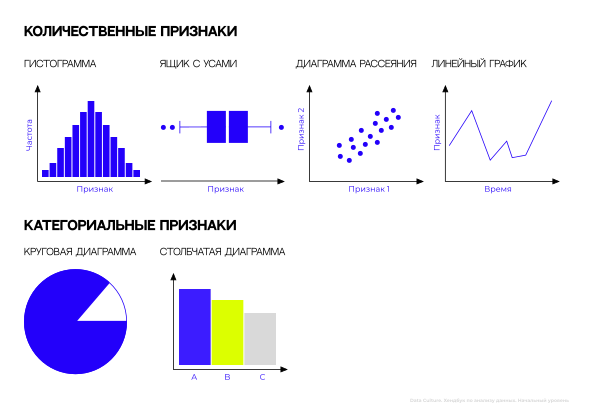

Хендбук. Анализ данных. Начальный уровень
Автор: Перевышина Татьяна
Верстка: Шарифулин Максим, Безносенкова Софья
Дизайн: Бутусова Катерина
Предисловие
Представьте, что вы собираете пазл. В начале у вас есть множество разрозненных кусочков информации, которые сами по себе не дают полной картины. Каждый кусочек — это отдельный фрагмент данных, который может быть числом, текстом или другим типом информации. Ваша задача — собрать эти кусочки вместе, чтобы увидеть общую картину. Сначала вы сортируете кусочки пазла по цвету или форме, чтобы облегчить задачу. В анализе данных это соответствует очистке и подготовке данных — удалению ненужных элементов, заполнению пропусков и приведению данных к нужному формату. Затем вы начинаете искать кусочки, которые подходят друг к другу, соединяя их в небольшие группы. В анализе данных это может быть поиск закономерностей между различными переменными. Постепенно, соединяя маленькие группы в большие, вы начинаете видеть общую картину. В анализе данных это означает, что вы находите ключевые инсайты, которые помогают понять, что происходит в данных. Когда пазл собран, вы видите полную картину — красивую сцену или изображение. В анализе данных это момент, когда вы понимаете, какие выводы можно сделать из данных и как их можно использовать для принятия решений.
В рамках этого курса вы освоите навыки анализа табличных данных, что позволит вам извлекать ценные инсайты, выявлять закономерности и принимать обоснованные решения на основе фактов. Например, компании собирают данные о продажах, чтобы понять, какие товары популярны, а какие нет, и как лучше планировать производство и рекламу. В результате анализа данных можно принимать более разумные решения, основываясь на фактах, а не на догадках.
Глава 1. Знакомство с библиотекой Pandas. Типы данных в анализе.
1.1 Что такое библиотека Pandas?
Представьте себе большую коробку с инструментами: там есть молоток, отвертка, пила и другие полезные вещи. Когда мы строим дом, нам не нужно изобретать эти инструменты заново — мы просто берем их из коробки и используем. Так и с библиотеками: когда программисту нужно сделать что-то сложное, например, обработать данные или нарисовать график, он берет готовую библиотеку, подключает её к своему проекту и пользуется уже написанным кодом.
Готовые инструменты для работы с табличными данными хранятся в библиотеке Pandas. Эта библиотека позволяет быстро загружать, сортировать, фильтровать и анализировать большие объемы данных, как если бы мы работали с электронными таблицами, такими как Excel. Однако Pandas имеет ряд объективных преимуществ перед Excel:
- Excel ограничен количеством строк (~1 млн строк максимум). Библиотека Pandas способна эффективно обрабатывать миллионы и даже миллиарды строк благодаря оптимизации вычислительных процессов внутри Python.
- Производительность Excel резко падает при увеличении объема обрабатываемых данных. Формулы, сводные таблицы и фильтры начинают тормозить, особенно если файл занимает много места в оперативной памяти. Библиотека Pandas способна намного эффективнее справляться со сложными операциями и расчетами на больших объемах.
- Работа в Excel зачастую связана с ручным редактированием формул и визуальным управлением данными, что делает процесс более трудоемким. В Python можно написать программу один раз, а потом многократно запускать её снова и снова, каждый раз получая стабильный и точный результат
- Эффективное использование Excel для анализа больших данных требует знания VBA-макросов, настройки Power Query и понимания тонкостей работы со сводными таблицами. Для решения аналогичных задач на Python достаточно базовых навыков программирования и умения пользоваться библиотеками Pandas.
Excel отлично подходит для небольших отчетов и простого анализа. Когда дело доходит до крупных проектов и регулярного обновления данных, профессиональные инструменты, такие как библиотека Pandas, становятся незаменимыми.
Чтобы начать использовать инструменты библиотеки Pandas, необходимо сделать импорт библиотеки в среду выполнения:
import pandas as pd- import – оператор, который подключает библиотеку в среду выполнения
- pandas - название импортируемой библиотеки
- as - оператор, с помощью которого задается псевдоним библиотеки
- pd - псевдоним, который позволяет обращаться к функциям библиотеки Pandas через сокращение pd. Это делается для удобства и сокращения кода.
Если при запуске кода вышла такая ошибка, это значит, что модуль Pandas еще не установлен на вашем компьютере. Чтобы его установить, нужно перед импортом добавить строку:
!pip install pandas1.2 Какие существуют структуры данных Pandas?
В библиотеке Pandas есть два основных способа хранения табличных данных: датафрейм DataFrame и серия Series.
DataFrame
Представьте себе электронную таблицу, такую как Excel. У неё есть строки и столбцы, и в каждой ячейке хранится информация. Датафрейм в Pandas — это такая же таблица, только для программирования. Он состоит из строк и столбцов, и каждая ячейка содержит данные.
Чтобы создать датафрейм, необходимо воспользоваться функцией pd.DataFrame() из библиотеки Pandas :
переменная = pd.DataFrame()
Для добавления столбцов мы указываем название переменной , в которой лежит датафрейм, затем в квадратных скобках указываем 'название столбца' и в него передаем список значений:
переменная['название столбца'] = [значение 1, значение 2, ...]
Столбцы могут иметь разные типы данных: числа, тексты, даты и т.д.
Предположим, мы хотим создать датафрейм с информацией про трех студентов. Чтобы его создать, нужно написать следующий код:
students = pd.DataFrame() # cоздаем пустой датафрейм
students['Имя'] = ['Иван', 'Ольга', 'Сергей'] # добавляем столбец с именами
students['Возраст'] = [20, 22, 21] # добавляем столбец с возрастом
students['Город'] = ['Москва', 'Казань', 'Новосибирск'] # добавляем столбец с городом
students # выводим датафрейм на экран Результат работы программы:
| Имя | Возраст | Город | |
|---|---|---|---|
| 0 | Иван | 20 | Москва |
| 1 | Ольга | 22 | Казань |
| 2 | Сергей | 21 | Новосибирск |
Первая колонка, выделенная жирным, — это индексы строк. Они служат уникальными номерами для каждой строки в датафрейме и позволяют быстро обращаться к нужной. Индексы создаются автоматически и начинаются с нуля.
Строку также называют наблюдением . Наблюдением в наших данных является студент. Например, мы видим, что Ольге 22 года и она из Казани. Это одно наблюдение.
Столбцы — это признаки , которые описывают наши наблюдения. Мы описываем наблюдения тремя характеристиками – именем, возрастом и городом.
Series
Каждый отдельный столбец датафрейма имеет формат серии (Series). Серия — это набор значений с уникальными метками (индексами). По сути, датафрейм состоит из множества серий, каждая из которых представляет собой колонку с индексами и колонку со значениями:

Помимо этого, мы можем создать собственную серию, которая не будет частью датафрейма. Чтобы это сделать, нужно воспользоваться функцией pd.Series() из библиотеки Pandas, а внутрь функции передать параметр data со списком значений:
переменная = pd.Series(data=[значение 1, значение 2, ...])
Предположим, у нас есть средний балл трех студентов. Чтобы сохранить эту информацию в серию, нужно написать следующий код:
gpa = pd.Series(data=[3.55, 8.24, 7.65]) # создаем серию
gpa # выводим серию на экранРезультат работы программы:
| 0 | |
|---|---|
| 0 | 3.55 |
| 1 | 8.24 |
| 2 | 7.65 |
Первый столбец, выделенный жирным, — индексы. Так же как и в датафрейме, они создаются автоматически и начинаются с нуля. С их помощью можно обратиться к любому значению в серии. Второй столбец — значения. В нашем случае это средний балл студентов.
Можно задать свои кастомные индексы для строк серии – для этого при создании нужно передать второй список с индексами в параметре index:
переменная = pd.Series(data=[значение 1, значения 2, ...],
index=[индекс 1, индекс 2, ...])
Например, мы хотим создать серию, в которой значением останется средний балл, а индексами будут имена студентов:
names_gpa = pd.Series(data=[3.55, 8.24, 7.65], # значения
index=['Иван', 'Ольга', 'Сергей']) # индексы
names_gpa # выводим серию на экранРезультат работы программы:
| 0 | |
|---|---|
| Иван | 3.55 |
| Ольга | 8.24 |
| Сергей | 7.65 |
Имена здесь не полноценная колонка, они лишь уникальные идентификаторы среднего балла.
1.3 Как извлекать основные элементы DataFrame?
В прошлом разделе мы создали датафрейм students . Сейчас мы научимся обращаться к его основным элементам: столбцам, строкам и конкретным значениям.
students # выводим датафрейм на экранРезультат работы программы:
| Имя | Возраст | Город | |
|---|---|---|---|
| 0 | Иван | 20 | Москва |
| 1 | Ольга | 22 | Казань |
| 2 | Сергей | 21 | Новосибирск |
ОБРАЩЕНИЕ К СТОЛБЦУ
Если мы хотим извлечь столбец из данных, нужно указать сначала название переменной, в которой лежит датафрейм , а затем в квадартных скобках и кавычках указать название столбца , который требуется извлечь:
датафрейм['название столбца']
Например, мы хотим извлечь столбец Возраст – для этого пишем следующий код:
students['Возраст']| Возраст | |
|---|---|
| 0 | 20 |
| 1 | 22 |
| 2 | 21 |
Как мы уже говорили, каждый отдельный столбец датафрейма имеет формат серии (Series).
ОБРАЩЕНИЕ К СТРОКЕ
Для обращения к строке используется атрибут .loc[] :
датафрейм.loc[индекс]
Если нам нужно извлечь информацию про Ольгу (информация про нее записана в строке под индексом 1) — пишем следующий код:
students.loc[1]| 1 | |
|---|---|
| Имя | Ольга |
| Возраст | 22 |
| Город | Казань |
ОБРАЩЕНИЕ К ЗНАЧЕНИЮ
К значению мы обращаемся по индексу строки и названию столбца одновременно:
датафрейм.loc[индекс]['название столбца']
или
датафрейм.loc[индекс, 'название столбца']
Если нам нужен Возраст Ольги (у нее индекс 1):
students.loc[1]['Возраст']Результат работы программы:
22
или
students.loc[1, 'Возраст']Результат работы программы:
22
1.4 Как открывать уже готовые таблицы?
Библиотека Pandas позволяет открывать уже готовые файлы с различными расширениями. Одним из наиболее распространенных форматов является .csv (Comma Separated Values), который широко используется для хранения табличных данных. Если вам необходимо открыть файл с расширением .csv:
переменная = pd.read_csv('путь к файлу')
Другой популярный формат — это .xlsx, применяемый в Microsoft Excel. Если вам необходимо открыть файл с расширением .xlsx:
переменная = pd.read_excel('путь к файлу')
Еще одно расширение, удобное для хранения табличных данных - это .pkl (Pickle). Чтобы открыть такой файл, используйте следующий код:
переменная = pd.read_pickle('путь к файлу')
Давайте попробуем открыть файл oscar.pkl. Скачайте его, а затем введите следующий код:
import pandas as pd
df = pd.read_pickle('путь к файлу/oscar.pkl') # открываем файл oscar.pkl
df # выводим датафрейм на экранВместо путь к файлу укажите путь к файлу oscra.pkl на вашем компьютере.
macOS
- 1. Найдите файл на компьютере
- 2. Нажмите на него правой кнопкой мыши -> Свойства -> Основные -> Где: путь к файлу
- 3. Нажмите на путь к файлу правой кнопкой мыши -> Скопировать как путь
- 4. Указывая путь в функции, не забудьте дописать название файла с расширением: /название.расширение
Windows
- 1. Найдите файл на компьютере
- 2. Нажмите на него правой кнопкой мыши -> Свойства -> Расположение: путь к файлу
- 3. Скопируйте путь к файлу
- 4. Указывая путь в функции, не забудьте дописать название файла с расширением: /название.расширение
Windows 10 и позднее
- 1. Найдите файл на компьютере
- 2. Нажмите на него правой кнопкой мыши -> Копировать как путь
FileNotFoundError
Вы неправильно указали путь к файлу. Попробуйте еще раз проделать все шаги в инструкции КАК НАЙТИ ПУТЬ К ФАЙЛУ?
SyntaxError: invalid syntax
Вы допустили синтаксическую ошибку: например, забыли закрыть скобку или кавычку, или сделали лишний отступ. Проверьте код еще раз.
SyntaxError: (unicode error) 'unicodeescape' codec can't decode bytes in position 2-3: truncated \UXXXXXXXX escape
Такая ошибка возникает, когда Python пытается интерпретировать строку, содержащую обратный слеш, как экранированную последовательность Unicode. Эта ошибка часто встречается при попытке использовать пути к файлам в Windows. Её можно легко исправить, добавив r перед путем к файлу:
df = pd.read_pickle(r'путь к файлу/oscar.pkl')Если вы все сделали верно, откроется следующая таблица:
| Film | Award | Rating | Votes | Content Rating | Release Date | |
|---|---|---|---|---|---|---|
| 0 | Wings | True | 7.5 | 12221 | PG-13 | 1927-08-12 |
| 1 | 7th Heaven | False | 7.7 | 3439 | NaN | NaT |
| 2 | The Racket | False | 6.7 | 1257 | NaN | NaT |
| 3 | The Broadway Melody | True | 5.7 | 6890 | NaN | 1929-02-01 |
| 4 | Alibi | False | 5.8 | 765 | NaN | NaT |
| ... | ... | ... | ... | ... | ... | ... |
| 566 | Mank | False | 6.9 | 65380 | NaN | NaT |
| 567 | Minari | False | 7.5 | 57976 | NaN | NaT |
| 568 | Promising Young Woman | False | 7.5 | 122269 | NaN | NaT |
| 569 | Sound of Metal | False | 7.8 | 102807 | NaN | NaT |
| 570 | The Trial of the Chicago 7 | False | 7.8 | 156283 | NaN | NaT |
ПРОСМОТР ДАННЫХ
У нас есть три основных способа посмотреть на наши данные.
Первый – написать название переменной, в которой лежит датафрейм (как мы сделали в коде выше):
dfВ этом случае выводится все содержимое датафрейма. Если данных очень много, выведутся первые и последние 5 строчек таблицы – это как раз наш случай.
Второй варинт — это метод .head() , который выводит первые 5 строчек таблицы:
df.head()| Film | Award | Rating | Votes | Content Rating | Release Date | |
|---|---|---|---|---|---|---|
| 0 | Wings | True | 7.5 | 12221 | PG-13 | 1927-08-12 |
| 1 | 7th Heaven | False | 7.7 | 3439 | NaN | NaT |
| 2 | The Racket | False | 6.7 | 1257 | NaN | NaT |
| 3 | The Broadway Melody | True | 5.7 | 6890 | NaN | 1929-02-01 |
| 4 | Alibi | False | 5.8 | 765 | NaN | NaT |
На самом деле, с помощью него можно вывести любое количество первых строк; достаточно указать это количество в круглых скобках. Например, если хочется вывести 7 первых строк, нужно написать следующий код:
df.head(7)| Film | Award | Rating | Votes | Content Rating | Release Date | |
|---|---|---|---|---|---|---|
| 0 | Wings | True | 7.5 | 12221 | PG-13 | 1927-08-12 |
| 1 | 7th Heaven | False | 7.7 | 3439 | NaN | NaT |
| 2 | The Racket | False | 6.7 | 1257 | NaN | NaT |
| 3 | The Broadway Melody | True | 5.7 | 6890 | NaN | 1929-02-01 |
| 4 | Alibi | False | 5.8 | 765 | NaN | NaT |
| 5 | Hollywood Revue | False | 5.7 | 2004 | NaN | NaT |
| 6 | In Old Arizona | False | 5.6 | 1019 | NaN | 1928-12-25 |
Если нужно вывести последние 5 строчек таблицы, можно воспользоваться методом .tail() :
df.tail()| Film | Award | Rating | Votes | Content Rating | Release Date | |
|---|---|---|---|---|---|---|
| 566 | Mank | False | 6.9 | 65380 | NaN | NaT |
| 567 | Minari | False | 7.5 | 57976 | NaN | NaT |
| 568 | Promising Young Woman | False | 7.5 | 122269 | NaN | NaT |
| 569 | Sound of Metal | False | 7.8 | 102807 | NaN | NaT |
| 570 | The Trial of the Chicago 7 | False | 7.8 | 156283 | NaN | NaT |
Аналогично методу .head() , .tail() может вывести любое количество последних строк; достаточно указать это количество в круглых скобках. Например, если требуется вывести 3 последние строки, нужно написать следующий код:
df.tail(3)| Film | Award | Rating | Votes | Content Rating | Release Date | |
|---|---|---|---|---|---|---|
| 568 | Promising Young Woman | False | 7.5 | 122269 | NaN | NaT |
| 569 | Sound of Metal | False | 7.8 | 102807 | NaN | NaT |
| 570 | The Trial of the Chicago 7 | False | 7.8 | 156283 | NaN | NaT |
1.5 Как получить основную информацию про DataFrame?
Пришло время познакомиться с нашими данными (oscar.pkl). Этот датасет содержит информацию о фильмах, номинированных на Оскар, и про каждый фильм нам известны следующие характеристики:
| Признак | Описание |
|---|---|
| Film | название фильма |
| Award | получил ли фильм Оскар (True — получил, False — не получил) |
| Rating | средний рейтинг фильма на портале IMDB |
| Votes | количество пользователей, поставивших оценку фильму на портале IMDB |
| Content Rating | возрастные ограничения: G — для всех возрастных категорий PG — для детей в сопровождении родителей PG-13 — для детей старше 13 лет R — лица, не достигшие 17-летнего возраста, допускаются на фильм только в сопровождении взрослых NC-17 — для лиц старше 17 лет |
| Release Date | дата выхода фильма |
РАЗМЕР ДАТАФРЕЙМА
Чтобы узнать количество строк и столбцов в датафрейме, можно воспользоваться свойством .shape :
df.shapeРезультат работы программы:
(571, 6)
Эта команда возвращает кортеж (tuple). Первое число - это количество строк (571 фильм), второе - количество столбцов (6 признаков, описывающих фильм).
ТИП ДАННЫХ СТОЛБЦОВ
Чтобы узнать, какие форматы данных лежат в каждой из колонок, воспользуйтесь свойством .dtypes :
df.dtypesРезультат работы программы:
| 0 | |
|---|---|
| Film | object |
| Award | bool |
| Rating | float64 |
| Votes | int64 |
| Content Rating | object |
| Release Date | datetime64[ns] |
Разберемся, что представляет из себя каждый из форматов.
- bool (признак Award): логический тип данных, значит в признаке может быть только два варианта значений (True или False ).
- int64 (признак Votes): признак содержит только целые числа. 64 - это количество битов, которое отводится под хранение одного числа.
- float64 (признак Rating): в столбце такого формата хранятся числа с плавающей точкой. У них есть дробная часть. Она может быть равна 0 (например 5.0), но тем не менее она есть.
- datetime64[ns] (признак Release Data): специальный формат данных в библиотеке Pandas, предназначенный для хранения даты и времени. Дата, в целом, может храниться в формате object, а признак с информацией о годе – в формате int64
- object (признак Film , Content Rating ): как правило, хранит текстовую информация (строки (str)), но может хранить и смешанные типы данных.
ОСНОВНАЯ ИНФОРМАЦИЯ
Для вывода сводной информации о структуре датафрейма используется метод .info() . Этот метод покажет количество строк и столбцов, типы данных для каждого столбца, наличие пропущенных значений и другие сведения.
df.info()Давайте обратим внимание на столбец Non-Null Count . Он показывает количество не пропущенных значений в каждом из признаков. Всего в датафрейме 571 фильм. По таблице .info() мы видим, что в признаках Film, Award, Rating, Votes - 571 не пропущенное значение (то есть в этих столбцах нет пропусков). Однако в столбце Content Rating и Release Date пропуски есть. Информацию про возрастные ограничения (Content Rating) имеют только 332 фильма, а про остальные 239 нам ничего не известно. Дата выхода фильма (Release Date) отсутствует у 132 фильмов.
Пропуски в данных могут обозначаться как NaN или NaT (в столбцах формата datetime64[ns] ). Можно увидеть пропуски в наших данных, даже выведя первые пять строк:
df.head()| Film | Award | Rating | Votes | Content Rating | Release Date | |
|---|---|---|---|---|---|---|
| 0 | Wings | True | 7.5 | 12221 | PG-13 | 1927-08-12 |
| 1 | 7th Heaven | False | 7.7 | 3439 | NaN | NaT |
| 2 | The Racket | False | 6.7 | 1257 | NaN | NaT |
| 3 | The Broadway Melody | True | 5.7 | 6890 | NaN | 1929-02-01 |
| 4 | Alibi | False | 5.8 | 765 | NaN | NaT |
1.6 Какие бывают типы данных в анализе?
В предыдущем разделе мы подробно разобрали технические типы данных в библиотеке Pandas (int64, float64, object и другие). Помимо технической стороны вопроса, важно понимать, какую именно информацию несут наши данные. Здесь технический взгляд уже не поможет — нужно обладать опытом и знаниями. Разделение признаков на виды позволит правильно выбрать для них подходящие методы анализа и способы визуализации.
Все признаки с точки зрения анализа данных можно разделить на две группы:
- Количественные (числовые)
- Категориальные (качественные)
Давайте теперь разберемся с каждым видом признака детальнее, включая их разновидности.
КОЛИЧЕСТВЕННЫЕ ДАННЫЕ
Примеры: количество детей в семье, рост
Контрольный вопрос для проверки: Признак измеряется численно? Да
Количественные данные делятся на два подтипа:
- Дискретные признаки
Такие признаки могут принимают только целые значения. Например, если в данных есть столбец количество детей в семье. Такой признак может быть только дискретным, потому что в семье не может быть 1.5 ребенка: либо 1, либо 2.
Примеры: количество детей в семье, количество книг в библиотеке, количество посадочных мест в кинозале
Контрольный вопрос для проверки: Признак может быть только целым числом? Да
- Непрерывные признаки
В отличии от дискретных данных, непрерывные признаки могут принимать дробные значения. Рост может быть посчитан с точностью до миллиметров (Например: Рост Кати 165.3 см).
Примеры: рост, вес, зарплата
Контрольный вопрос для проверки: Признак может быть дробным числом? Да
КАТЕГОРИАЛЬНЫЕ ДАННЫЕ
Примеры: уровень образования, пол
Контрольный вопрос для проверки: ризнак измеряется численно? Нет
Категориальные данные выражаются через названия, классы или состояния. Такие признаки нельзя упорядочить естественным образом или выразить числами, хотя их можно перекодировать числами. Например, если у нас есть признак уровень образования, который содержит следующие категории: начальное, среднее и высшее, мы можем перекодировать их следующим образом: начальное - 1, среднее - 2 и высшее - 3. От того, что мы их перекодировали, смысл признака не изменился, это все еще принадлежность объекта к группе людей с определенным уровнем образования. Только теперь они называются 1, 2 или 3, а не начальное, среднее, высшее.
Категориальные данные делятся на два подтипа:
- Порядковые (ранговые) признаки
У категорий такого признака есть порядок, но расстояния между ними не определены. То есть мы можем сказать, что одна категория больше/лучше/сильнее другой, но не знаем, насколько. Уровень образования, о котором мы говорили выше, это порядковый признак. Мы можем расставить уровни образования от самого высокого к самому низкому, то есть у них есть шкала.
Примеры: уровень образования (начальное/среднее/высшее), оценка успеваемости (неудовлетворительно/удовлетворительно/хорошо/отлично)
Контрольный вопрос для проверки: Категории в признаке можно упорядочить? Да
- Номинальные признаки
Номинальный признак описывает различия между объектами без какого-либо порядка. Каждое значение номиналального признака относится к отдельной категории, которую невозможно упорядочить. Если мы работаем с данными по автомобилям, там может быть признак, описывающий их цвет. Автомобили могут быть красными, черными, зелеными и т.д. Мы не можем сказать, что один цвет лучше чем другой (только субъективно); такие категории нельзя упорядочить, значит признак является номинальным.
Примеры : цвет автомобиля (красный/черный/зеленый и т.д.), имя человека (Таня/Саша/Коля и т.д.)
Контрольный вопрос для проверки : Категории в признаке можно упорядочить? Нет
- Бинарные признаки
Это подтип номинальных данных. Бинарные признаки могут содержать только две категории, например 1/0, True/False, да/нет и т.д.
Примеры : наличие социальных сетей (да/нет), семейное положение (женат/не женат)
Контрольный вопрос для проверки : У признака две категории? Да
Глава 2. Фильтрация и сортировка
2.1 Как сделать фильтрацию в DataFrame?
Часто при работе с большими наборами данных необходимо сконцентрировать внимание только на конкретных наблюдениях, обладающих определенными характеристиками. Такой инструмент анализа называется фильтрацией.
Рассмотрим, как работает фильтрация на данных по заказам пиццы в течение года:
| Признак | Описание | Формат данных(.dtypes) |
|---|---|---|
| order_date | дата заказа (день/месяц) | object |
| order_hour | час дня, в который сделан заказ | int64 |
| pizza_name_id | вид пиццы (hawaiian, pepperoni и т.д.) | object |
| pizza_size | размер пиццы (S, M, L и т.д.) | object |
| pizza_category | описание пиццы (Classic, Veggie и т.д.) | object |
| quantity | количество пицц | float64 |
| total_price | стоимость заказа ($) | float64 |
| pizza_ingredients | ингредиенты | object |
| delivery_price | стоимость доставки | float64 |
Одно наблюдение - это один заказ.
import pandas as pd
df = pd.read_csv('pizza.csv')
df.head()Результат работы программы:
| order_date | order_hour | pizza_name_id | pizza_size | pizza_category | quantity | total_price | pizza_ingredients | delivery_price | |
|---|---|---|---|---|---|---|---|---|---|
| 0 | 30/03 | 13 | big | S | Classic | 4.0 | 48.00 | Bacon, Italian Sausage... | 30.86 |
| 1 | 19/09 | 14 | cali | L | Chicken | 4.0 | 83.00 | Chicken, Artichoke... | 9.33 |
| 2 | 19/09 | 14 | cali | L | Chicken | 4.0 | 83.00 | Chicken, Artichoke... | 9.33 |
| 3 | 19/09 | 14 | cali | L | Chicken | 4.0 | 83.00 | Chicken, Artichoke... | 9.33 |
| 4 | 19/09 | 14 | cali | L | Chicken | 4.0 | 83.00 | Chicken, Artichoke... | 9.33 |
ФИЛЬТРАЦИЯ С ОДНИМ УСЛОВИЕМ
датафрейм[условие фильтрации]
В датафрейме есть колонка pizza_name_id, в которой прописано, какую пиццу заказал клиент. Если нам нужно найти заказы только с гавайской пиццей (hawaiian; pizza_name_id), сделаем следующую фильтрацию:
df[df['pizza_name_id'] == 'hawaiian']df - это датафрейм фильтрации
df['pizza_name_id'] == 'hawaiian' - это условие фильтрации:
- df['pizza_name_id'] - обращение к признаку pizza_name_id;
- == 'hawaiian' - соответствует гавайской пицце ('hawaiian' в кавычках, так как данные типа object )
df[df['pizza_name_id'] == 'hawaiian']| order_date | order_hour | pizza_name_id | pizza_size | pizza_category | quantity | total_price | pizza_ingredients | delivery_price | |
|---|---|---|---|---|---|---|---|---|---|
| 20 | 03/10 | 21 | hawaiian | L | Classic | 3.0 | 49.50 | Sliced Ham, Pineapple... | 30.31 |
| 38 | 07/07 | 16 | hawaiian | S | Classic | 2.0 | 21.00 | Sliced Ham, Pineapple... | 44.61 |
| 46 | 29/11 | 12 | hawaiian | L | Classic | 2.0 | 33.00 | Sliced Ham, Pineapple... | 37.14 |
| 48 | 11/02 | 11 | hawaiian | S | Classic | 2.0 | 21.00 | Sliced Ham, Pineapple... | 46.42 |
| 61 | 20/04 | 13 | hawaiian | S | Classic | 2.0 | 21.00 | Sliced Ham, Pineapple... | 44.50 |
| ... | ... | ... | ... | ... | ... | ... | ... | ... | ... |
| 48574 | 01/05 | 15 | hawaiian | M | Classic | 1.0 | 13.25 | Sliced Ham, Pineapple... | 49.21 |
| 48588 | 01/05 | 16 | hawaiian | M | Classic | 1.0 | 13.25 | Sliced Ham, Pineapple... | 52.92 |
| 48595 | 01/05 | 16 | hawaiian | S | Classic | 1.0 | 10.50 | Sliced Ham, Pineapple... | 54.59 |
| 48615 | 01/05 | 14 | hawaiian | S | Classic | 1.0 | 10.50 | Sliced Ham, Pineapple... | 55.76 |
| 48618 | 01/05 | 14 | hawaiian | L | Classic | 1.0 | 16.50 | Sliced Ham, Pineapple... | 51.78 |
Фильтрацию можно сделать по признакам типа int64 и float64 . Например, мы хотим найти заказы с более чем одной пиццей (quantity):
df[df['quantity'] > 1]df - это датафрейм фильтрации
df['quantity'] > 1 - это условие фильтрации:
- df['quantity'] - обращение к признаку quantity;
- > 1 - более чем одной (1 без кавычек, так как данные типа float64)
df[df['quantity'] > 1]| order_date | order_hour | pizza_name_id | pizza_size | pizza_category | quantity | total_price | pizza_ingredients | delivery_price | |
|---|---|---|---|---|---|---|---|---|---|
| 0 | 30/03 | 13 | big | S | Classic | 4.0 | 48.00 | Bacon, Italian Sausage, | 30.86 |
| 1 | 19/09 | 14 | cali | L | Chicken | 4.0 | 83.00 | Chicken, Artichoke... | 9.33 |
| 2 | 19/05 | 12 | big | S | Classic | 4.0 | 48.00 | Bacon, Pepperoni... | 33.19 |
| 3 | 13/02 | 13 | sicilian | M | Supreme | 3.0 | 48.75 | Coarse Sicilian Salami... | 31.06 |
| 4 | 01/06 | 12 | spicy | S | Supreme | 3.0 | 37.50 | Capocollo, Tomatoes... | 34.19 |
| ... | ... | ... | ... | ... | ... | ... | ... | ... | ... |
| 922 | 14/02 | 14 | spinach | M | Supreme | 2.0 | 33.00 | Spinach, Red Onions... | 38.94 |
| 923 | 08/06 | 18 | southw | M | Chicken | 2.0 | 33.50 | Chicken, Tomatoes... | 38.40 |
| 924 | 31/12 | 19 | bbq | L | Chicken | 2.0 | 41.50 | Barbecued Chicken... | 35.25 |
| 925 | 24/07 | 14 | veggie | S | Veggie | 2.0 | 24.00 | Mushrooms, Tomatoes... | 46.11 |
| 926 | 28/04 | 12 | peppr | S | Supreme | 2.0 | 25.00 | Genoa Salami, Capocollo... | 43.67 |
Чтобы написать условия, вам понадобятся операторы сравнения:
| Оператор | Описание |
|---|---|
| == | равно; соответствует |
| != | не равно |
| > | больше |
| >= | больше или равно |
| < | меньше |
| <= | меньше или равно |
ФИЛЬТРАЦИЯ ПО НЕСКОЛЬКИМ УСЛОВИЯМ
Довольно часто фильтрацию нужно сделать по нескольким признакам. Тогда каждое из условий нужно прописывать в круглых скобках, а между круглыми скобками должен стоять оператор:
датафрейм[(условие 1) оператор (условие 2) оператор ...]
На месте оператора может стоять & или | :
-
& - оператор "И". Используйте его, если нужно, чтобы все прописанные условия выполнялись одновременно:
датафрейм[(условие 1) & (условие 2) & ...] # одновременное выполнение всех условий
-
| - оператор "ИЛИ". Его мы используем, когда хотим найти наблюдения, которые соответствуют хотя бы одному из прописанных условий.
датафрейм[(условие 1) | (условие 2) | ...] # выполняется хотя бы одно условие
Предположим, нам нужно найти заказы только с гавайской пиццей (hawaiian; pizza_name_id) и при этом количество пицц в заказе (quantity) должно быть больше одной.
У нас два условия, которые должны выполняться одновременно, значит используем оператор & :
df[(df['pizza_name_id'] == 'hawaiian') & (df['quantity'] > 1)]df - это датафрейм фильтрации
(df['pizza_name_id']=='hawaiian')&(df['quantity'] > 1)- это условие фильтрации:
- df['pizza_name_id'] == 'hawaiian'] - гавайские пиццы
- & - и
- df['quantity'] > 1 - в заказе их больше 1
| order_date | order_hour | pizza_name_id | pizza_size | pizza_category | quantity | total_price | pizza_ingredients | delivery_price | |
|---|---|---|---|---|---|---|---|---|---|
| 0 | 30/03 | 13 | big | S | Classic | 4.0 | 48.00 | Bacon, Pepperoni... | 30.86 |
| 1 | 19/09 | 14 | cali | L | Chicken | 4.0 | 83.00 | Chicken, Artichoke... | 9.33 |
| 2 | 19/05 | 12 | big | S | Classic | 4.0 | 48.00 | Bacon, Pepperoni... | 33.19 |
| 3 | 13/02 | 13 | sicilian | M | Supreme | 3.0 | 48.75 | Coarse Sicilian Salami... | 31.06 |
| 4 | 01/06 | 12 | spicy | S | Supreme | 3.0 | 37.50 | Capocollo, Tomatoes... | 34.19 |
| ... | ... | ... | ... | ... | ... | ... | ... | ... | ... |
| 48574 | 01/05 | 15 | hawaiian | M | Classic | 1.0 | 13.25 | Sliced Ham, Pineapple... | 49.21 |
| 48588 | 01/05 | 16 | hawaiian | M | Classic | 1.0 | 13.25 | Sliced Ham, Pineapple... | 52.92 |
| 48595 | 01/05 | 16 | hawaiian | S | Classic | 1.0 | 10.50 | Sliced Ham, Pineapple... | 54.59 |
| 48615 | 01/05 | 14 | hawaiian | S | Classic | 1.0 | 10.50 | Sliced Ham, Pineapple... | 55.76 |
| 48618 | 01/05 | 14 | hawaiian | L | Classic | 1.0 | 16.50 | Sliced Ham, Pineapple... | 51.78 |
Поменяв & на | , мы получим уже другую фильтрацию. Будут выведены все заказы с гавайской пиццей (hawaiian; pizza_name_id) и все заказы, где количество пицц (quantity) больше одной, не обязательно с гавайской:
df[(df['pizza_name_id'] == 'hawaiian') | (df['quantity'] > 1)]df - это датафрейм фильтрации
(df['pizza_name_id'] == 'hawaiian')|(df['quantity']>1) - это условие фильтрации:
- df['pizza_name_id'] == 'hawaiian'] - гавайские пиццы
- | - или
- df['quantity'] > 1 - заказы, где пицц больше 1
| order_date | order_hour | pizza_name_id | pizza_size | pizza_category | quantity | total_price | pizza_ingredients | delivery_price | |
|---|---|---|---|---|---|---|---|---|---|
| 0 | 03/10 | 21 | hawaiian | L | Classic | 3.0 | 49.5 | Sliced Ham, Pineapple... | 30.31 |
| 38 | 07/07 | 16 | hawaiian | S | Classic | 2.0 | 21.0 | Sliced Ham, Pineapple... | 44.61 |
| 46 | 29/11 | 12 | hawaiian | L | Classic | 2.0 | 33.0 | Sliced Ham, Pineapple... | 37.14 |
| 48 | 11/02 | 11 | hawaiian | S | Classic | 2.0 | 21.0 | Sliced Ham, Pineapple... | 46.42 |
| 61 | 20/04 | 13 | hawaiian | S | Classic | 2.0 | 21.0 | Sliced Ham, Pineapple... | 44.50 |
| ... | ... | ... | ... | ... | ... | ... | ... | ... | ... |
| 835 | 17/11 | 12 | hawaiian | M | Classic | 2.0 | 26.5 | Sliced Ham, Pineapple... | 44.90 |
| 841 | 30/03 | 13 | hawaiian | L | Classic | 2.0 | 33.0 | Sliced Ham, Pineapple... | 39.14 |
| 846 | 02/01 | 18 | hawaiian | S | Classic | 2.0 | 21.0 | Sliced Ham, Pineapple... | 49.39 |
| 888 | 11/11 | 19 | hawaiian | L | Classic | 2.0 | 33.0 | Sliced Ham, Pineapple... | 39.97 |
| 914 | 25/10 | 17 | hawaiian | S | Classic | 2.0 | 21.0 | Sliced Ham, Pineapple... | 46.77 |
Для того чтобы сделать фильтрацию по нескольким значениям одного признака, удобно воспользоваться методом .isin() , внутрь которого можно передать список искомых категорий:
датафрейм[датафрейм['признак'].isin([значение 1, значение 2, ...])]
Например, мы хотим найти заказы с гавайской пиццей (hawaiian; pizza_name_id) и пиццей пепперони (pepperoni; pizza_name_id):
df[df['pizza_name_id'].isin(['hawaiian', 'pepperoni'])]df - это датафрейм фильтрации
df['pizza_name_id'].isin(['hawaiian', 'pepperoni']) - это условие фильтрации:
- df['pizza_name_id'] - обращаемся к признаку pizza_name_id
- .isin(['hawaiian', 'pepperoni']) - берем из него только заказы с гавайской пиццей и пиццей пепперони
| order_date | order_hour | pizza_name_id | pizza_size | pizza_category | quantity | total_price | pizza_ingredients | delivery_price | |
|---|---|---|---|---|---|---|---|---|---|
| 18 | 07/01 | 14 | pepperoni | M | Classic | 3.0 | 37.50 | Mozzarella Cheese, Pepperoni | 37.23 |
| 20 | 03/10 | 21 | hawaiian | L | Classic | 3.0 | 49.50 | Sliced Ham, Pineapple... | 30.31 |
| 34 | 29/10 | 11 | pepperoni | M | Classic | 2.0 | 25.00 | Mozzarella Cheese, Pepperoni | 46.23 |
| 38 | 07/07 | 16 | hawaiian | S | Classic | 2.0 | 21.00 | Sliced Ham, Pineapple... | 44.61 |
| 46 | 29/11 | 12 | hawaiian | L | Classic | 2.0 | 33.00 | Sliced Ham, Pineapple... | 37.14 |
| ... | ... | ... | ... | ... | ... | ... | ... | ... | ... |
| 48588 | 01/05 | 16 | hawaiian | M | Classic | 1.0 | 13.25 | Sliced Ham, Pineapple... | 52.92 |
| 48594 | 01/05 | 17 | pepperoni | L | Classic | 1.0 | 15.25 | Mozzarella Cheese, Pepperoni | 50.38 |
| 48595 | 01/05 | 16 | hawaiian | S | Classic | 1.0 | 10.50 | Sliced Ham, Pineapple... | 54.59 |
| 48615 | 01/05 | 14 | hawaiian | S | Classic | 1.0 | 10.50 | Sliced Ham, Pineapple... | 55.76 |
| 48618 | 01/05 | 14 | hawaiian | L | Classic | 1.0 | 16.50 | Sliced Ham, Pineapple... | 51.78 |
ПОДСЧЕТ КОЛИЧЕСТВА НАБЛЮДЕНИЙ ПОСЛЕ ФИЛЬТРАЦИИ
Если мы хотим узнать, сколько строк соответсвует нашему условию фильтрации, можно воспользоваться свойством .shape , которое мы рассмотрели в прошлой главе. Свойство возвращает кортеж, первый элемент которого - количество строк, второй - количество столбцов. Добавляя [0] , мы извлекаем количество строк из отфильтрованных данных:
датафрейм[условие/я фильтрации].shape[0]
Если мы хотим посчитать количество заказов с гавайской пиццей (hawaiian; pizza_name_id), то напишем:
df[df['pizza_name_id'] == 'hawaiian'].shape[0]Получается, таких заказов было 2370.
2.2 Как сделать сортировку в DataFrame?
Еще один полезный инструмент анализа - это сортировка.
Для сортировки в библиотеке Pandas используется метод .sort_values() :
датафрейм.sort_values('признак') # по возрастанию
или
датафрейм.sort_values('признак', ascending=False) # по убыванию
Если мы хотим отсортировать строки нашего датафрейма по возрастанию цены заказа (total_price):
df.sort_values('total_price')| order_date | order_hour | pizza_name_id | pizza_size | pizza_category | quantity | total_price | pizza_ingredients | delivery_price | |
|---|---|---|---|---|---|---|---|---|---|
| 48468 | 29/12 | 22 | pepperoni | S | Classic | 1.0 | 9.75 | Mozzarella Cheese, Pepperoni | 55.12 |
| 16337 | 31/12 | 16 | pepperoni | S | Classic | 1.0 | 9.75 | Mozzarella Cheese, Pepperoni | 57.07 |
| 16610 | 31/12 | 14 | pepperoni | S | Classic | 1.0 | 9.75 | Mozzarella Cheese, Pepperoni | 54.55 |
| 16621 | 28/12 | 12 | pepperoni | S | Classic | 1.0 | 9.75 | Mozzarella Cheese, Pepperoni | 54.07 |
| 16385 | 28/12 | 12 | pepperoni | S | Classic | 1.0 | 9.75 | Mozzarella Cheese, Pepperoni | 54.07 |
| ... | ... | ... | ... | ... | ... | ... | ... | ... | ... |
| 9 | 02/01 | 12 | hspicy | L | Supreme | 1.0 | 62.25 | Capocollo, Tomatoes... | 24.38 |
| 17 | 17/10 | 12 | bbq | L | Chicken | 3.0 | 62.25 | Barbecued Chicken, Red Peppers... | 21.06 |
| 16 | 15/05 | 14 | thai | L | Chicken | 3.0 | 62.25 | Chicken, Pineapple... | 23.09 |
| 13 | 08/10 | 12 | prsc | L | Supreme | 3.0 | 62.25 | Prosciutto di San Daniele... | 25.16 |
| 1 | 19/09 | 14 | cali | L | Chicken | 4.0 | 83.00 | SChicken, Artichoke... | 9.33 |
Первыми вывелись самые дешевые заказы, а в конце самые дорогие.
Для сортировки в обратном порядке (от самых дорогих заказов к дешевым) нужно добавить параметр ascending=False :
df.sort_values('total_price', ascending=False)| order_date | order_hour | pizza_name_id | pizza_size | pizza_category | quantity | total_price | pizza_ingredients | delivery_price | |
|---|---|---|---|---|---|---|---|---|---|
| 1 | 19/09 | 14 | cali | L | Chicken | 4.0 | 83.00 | Chicken, Artichoke... | 9.33 |
| 9 | 02/01 | 12 | spicy | L | Supreme | 3.0 | 62.25 | Capocollo, Tomatoes... | 24.38 |
| 16 | 15/05 | 14 | thai | L | Chicken | 3.0 | 62.25 | Chicken, Pineapple... | 23.09 |
| 17 | 17/10 | 12 | bbq | L | Chicken | 3.0 | 62.25 | Barbecued Chicken... | 21.06 |
| 13 | 08/10 | 12 | prsc | L | Supreme | 3.0 | 62.25 | Prosciutto di San Daniele... | 25.16 |
| 36861 | 01/06 | 17 | pepperoni | S | Classic | 1.0 | 9.75 | Mozzarella Cheese, Pepperoni | 54.05 |
| 21892 | 08/11 | 14 | pepperoni | S | Classic | 1.0 | 9.75 | Mozzarella Cheese, Pepperoni | 54.96 |
| 3515 | 18/09 | 12 | pepperoni | S | Classic | 1.0 | 9.75 | Mozzarella Cheese, Pepperoni | 56.73 |
| 46244 | 07/05 | 19 | pepperoni | S | Classic | 1.0 | 9.75 | Mozzarella Cheese, Pepperoni | 56.01 |
| 3551 | 18/09 | 13 | pepperoni | S | Classic | 1.0 | 9.75 | Mozzarella Cheese, Pepperoni | 53.61 |
ФИЛЬТРАЦИЯ И СОРТИРОВКА
Сортировать можно и отфильтрованные данные:
датафрейм[условие/ия фильтрации].sort_values('признак') # по возрастанию
или
датафрейм[условие/ия фильтрации].sort_values('признак', ascending=False) # по убыванию
Если нам нужны только заказы с гавайской пиццей (hawaiian; pizza_name_id), отсортированные по возрастанию их стоимости (total_price), напишем следующий код:
df[df['pizza_name_id'] == 'hawaiian'].sort_values('total_price')df[df['pizza_name_id'] == 'hawaiian'] - берем заказы только с гавайской пиццей
.sort_values('total_price') - сортируем их по возрастанию стоимости
| order_date | order_hour | pizza_name_id | pizza_size | pizza_category | quantity | total_price | pizza_ingredients | delivery_price | |
|---|---|---|---|---|---|---|---|---|---|
| 48615 | 01/05 | 14 | hawaiian | S | Classic | 1.0 | 10.5 | Sliced Ham, Pineapple... | 55.76 |
| 19599 | 21/10 | 13 | hawaiian | S | Classic | 1.0 | 10.5 | Sliced Ham, Pineapple... | 55.57 |
| 19595 | 21/10 | 13 | hawaiian | S | Classic | 1.0 | 10.5 | Sliced Ham, Pineapple... | 52.79 |
| 19493 | 21/10 | 21 | hawaiian | S | Classic | 1.0 | 10.5 | Sliced Ham, Pineapple... | 53.16 |
| 19427 | 20/10 | 16 | hawaiian | S | Classic | 1.0 | 10.5 | Sliced Ham, Pineapple... | 51.92 |
| 694 | 25/10 | 13 | hawaiian | L | Classic | 2.0 | 33.0 | Sliced Ham, Pineapple... | 37.47 |
| 725 | 12/08 | 12 | hawaiian | L | Classic | 2.0 | 33.0 | Sliced Ham, Pineapple... | 38.30 |
| 594 | 24/05 | 17 | hawaiian | L | Classic | 2.0 | 33.0 | Sliced Ham, Pineapple... | 35.29 |
| 764 | 03/04 | 20 | hawaiian | L | Classic | 2.0 | 33.0 | Sliced Ham, Pineapple... | 38.96 |
| 20 | 03/10 | 21 | hawaiian | L | Classic | 3.0 | 49.5 | Sliced Ham, Pineapple.. | 30.31 |
Если нужна сортировка по убыванию:
df[df['pizza_name_id'] == 'hawaiian'].sort_values('total_price', ascending=False)df[df['pizza_name_id'] == 'hawaiian'] - берем заказы только с гавайской пиццей
.sort_values('total_price', ascending=False) - сортируем их по убыванию стоимости
| order_date | order_hour | pizza_name_id | pizza_size | pizza_category | quantity | total_price | pizza_ingredients | delivery_price | |
|---|---|---|---|---|---|---|---|---|---|
| 20 | 03/10 | 21 | hawaiian | L | Classic | 3.0 | 49.5 | Sliced Ham, Pineapple... | 30.31 |
| 458 | 26/05 | 14 | hawaiian | L | Classic | 2.0 | 33.0 | Sliced Ham, Pineapple... | 42.15 |
| 409 | 13/12 | 16 | hawaiian | L | Classic | 2.0 | 33.0 | Sliced Ham, Pineapple... | 40.26 |
| 490 | 26/02 | 13 | hawaiian | L | Classic | 2.0 | 33.0 | Sliced Ham, Pineapple... | 37.93 |
| 78 | 07/07 | 12 | hawaiian | L | Classic | 2.0 | 33.0 | Sliced Ham, Pineapple... | 39.25 |
| 1632 | 31/08 | 20 | hawaiian | S | Classic | 1.0 | 10.5 | Sliced Ham, Pineapple... | 55.58 |
| 1652 | 01/09 | 12 | hawaiian | S | Classic | 1.0 | 10.5 | Sliced Ham, Pineapple... | 53.96 |
| 47732 | 26/04 | 12 | hawaiian | S | Classic | 1.0 | 10.5 | Sliced Ham, Pineapple... | 53.55 |
| 47788 | 24/04 | 22 | hawaiian | S | Classic | 1.0 | 10.5 | Sliced Ham, Pineapple... | 50.96 |
| 47793 | 25/04 | 12 | hawaiian | S | Classic | 1.0 | 10.5 | Sliced Ham, Pineapple... | 52.50 |
2.3 В чем разница между .loc[] и .iloc[] ?
В прошлой главе мы с вами рассмотрели метод .loc[] , с помощью которого можно обращаться к строке по индексу:
датафрейм.loc[индекс] # обращение к строке по индексу
Например, мы хотим извлечь заказ под индексом 0:
df.iloc[0]| 0 | |
|---|---|
| order_date | 30/03 |
| order_hour | 13 |
| pizza_name_id | big |
| pizza_size | S |
| pizza_category | Classic |
| quantity | 4.0 |
| total_price | 48.0 |
| pizza_ingredients | Bacon, Pepperoni, Italian Sausage, Chorizo Sausage |
| delivery_price | 30.31 |
Если нужно конретное значение из датафрейма, к нему можно обратиться по индексу и признаку:
датафрейм.loc[индекс]['признак'] # обращение к значению по индексу и признаку
Например мы хотим узнать какие ингредиенты (pizza_ingredients) были использованы для пиццы в заказе под индексом 0:
df.iloc[0]['pizza_ingredients']Но иногда возникает необходимость обратиться к данным не по их индексу, а по их положению в таблице. Особенно это актуально, когда мы выполняем операции сортировки или изменения порядка строк – ведь при сортировке меняется именно местоположение строк, а не их индекс.
Здесь нам и пригодится метод .iloc[] , который даёт возможность обращаться к данным по их положению в датафрейме:
датафрейм.iloc[положение] # обращение к строке по положению
или
датафрейм.iloc[положение]['признак'] # обращение к значению по положению и признаку
положение показывает место строки в датафрейме: к первой строке можно обратиться через 0, ко второй через 1, и т.д. Также существует обратная нумерация положения строк: у последней строки положение -1, у предпоследней -2 и т.д.
Чтобы найти, из каких ингредиентов (pizza_ingredients) состоит пицца в самом дешевом заказе (total price), нужно написать следующий код:
df.sort_values('total_price').iloc[0]['pizza_ingredients']df.sort_values('total_price') - сортируем заказы по возрастанию цены
.iloc[0] - извлекаем первую строку после сортировки (положение 0)
['pizza_ingredients'] - извлекаем ингредиенты пиццы в самом дешевом заказе
Если бы мы применили метод .loс[0] в коде выше, мы бы не получили необходимый результат. Код бы вернул ингредиенты в заказе под иском индексом 0, а не первом заказе после сортировки по возрастанию цены:
df.sort_values('total_price').loc[0]['pizza_ingredients']2.4 Как сделать фильтрацию или сортировку в Series?
В предыдущих разделах мы изучили, как выполнять фильтрацию и сортировку данных в объектах типа DataFrame . Но аналогичные операции нередко нужны и для одиночных столбцов (Series ). Хотя в целом подходы идентичны, имеются небольшие различия в синтаксисе.
Представьте, что у вас есть серия pizza , которая содержит названия пицц (индексы) и их цену в долларах (значения):
import pandas as pd
pizza = pd.Series (data=[10, 15, 13, 12],
index=['margherita', 'capricciosa', 'hawaiian', 'four cheese'])
pizza| 0 | |
|---|---|
| margherita | 10 |
| capricciosa | 15 |
| hawaiian | 13 |
| four cheese | 12 |
ФИЛЬТРАЦИЯ СЕРИИ
серия[условие фильтрации]
Если мы хотим найти все пиццы, цена которых больше 10 долларов:
pizza[pizza>10]| 0 | |
|---|---|
| capricciosa | 15 |
| hawaiian | 13 |
| four cheese | 12 |
При фильтрации серии (Series ) не нужно обращаться к столбцу, как это делалось в DataFrame . Просто повторяем имя самой серии в условии.
СОРТИРОВКА
Для сортировки значений серии также используется метод .sort_values() , но внутри него мы не указываем название признака:
серия.sort_values() # по возрастанию значений
или
серия.sort_values(ascending=False) # по убыванию значений
Если мы хотим расставить пиццы по возрастанию цены:
pizza.sort_values()| 0 | |
|---|---|
| margherita | 10 |
| four cheese | 12 |
| hawaiian | 13 |
| capricciosa | 15 |
Если нужна сортировка по убыванию цены, нужно добавить параметр ascending=False :
pizza.sort_values(ascending=False)| 0 | |
|---|---|
| capricciosa | 15 |
| hawaiian | 13 |
| four cheese | 12 |
| margherita | 10 |
В серии еще есть столбец индексов – в нашем случае это название пиццы. По нему также можно сделать сортировку, но для этого нужно воспользоваться методом .sort_index() :
серия.sort_index() # по возрастанию индексов
или
серия.sort_index(ascending=False) # по убыванию индексов
Чтобы отсортировать серию по названию пиццы (индексам):
pizza.sort_index()| 0 | |
|---|---|
| capricciosa | 15 |
| four cheese | 12 |
| hawaiian | 13 |
| margherita | 10 |
Глава 3. Новые признаки
3.1 Как создать новый признак в данных?
В этой главе мы изучим, как создавать новые столбцы в датафрейме. Создавая признаки, мы можем получить из уже имеющихся данных новую полезную информацию, которая может нам пригодиться для анализа и принятия решений.
Давайте снова обратимся к данным по заказам пиццы
pizza.csv:
| Признак | Описание | Формат данных(.dtypes) |
|---|---|---|
| order_date | дата заказа (день/месяц) | object |
| order_hour | час дня, в который сделан заказ | int64 |
| pizza_name_id | вид пиццы (hawaiian, pepperoni и т.д.) | object |
| pizza_size | размер пиццы (S, M, L и т.д.) | object |
| pizza_category | описание пиццы (Classic, Veggie и т.д.) | object |
| quantity | количество пицц | float64 |
| total_price | стоимость заказа ($) | float64 |
| pizza_ingredients | ингредиенты | object |
| delivery_price | стоимость доставки | float64 |
Одно наблюдение - это один заказ.
import pandas as pd
df = pd.read_csv('pizza.csv')
df.head()Результат работы программы:
| order_date | order_hour | pizza_name_id | pizza_size | pizza_category | quantity | total_price | pizza_ingredients | |
|---|---|---|---|---|---|---|---|---|
| 0 | 30/03 | 13 | big | S | Classic | 4.0 | 48.00 | Bacon, Pepperoni, ... |
| 1 | 19/09 | 14 | cali | L | Chicken | 4.0 | 83.00 | Chicken, Artichoke, ... |
| 2 | 19/05 | 12 | big | S | Classic | 4.0 | 48.00 | Bacon, Pepperoni, ... |
| 3 | 13/02 | 13 | sicilian | M | Supreme | 3.0 | 48.75 | Coarse Sicilian Salami, ... |
| 4 | 01/06 | 12 | spicy | S | Supreme | 3.0 | 37.50 | Capocollo, Tomatoes, ... |
Самый простой способ создать новый признак – это выполнить арифметические операции уже с существующими столбцами. Например, у нас есть колонка количество пицц в заказе (quantity) и стоимость заказа (total_price), на их основе мы можем посчитать, сколько стоит одна пицца, разделив total_price на quantity. Назовем этот новый столбец со стоимостью одной пиццы unit_price:
df['unit_price'] = df['total_price']/df['quantity'] # создаем новый признак unit_price
df # выводим датафрейм| order_date | order_hour | pizza_name_id | pizza_size | pizza_category | quantity | total_price | pizza_ingredients | unit_price | |
|---|---|---|---|---|---|---|---|---|---|
| 0 | 30/03 | 13 | big | S | Classic | 4.0 | 48.00 | Bacon, Pepperoni, ... | 12.00 |
| 1 | 19/09 | 14 | cali | L | Chicken | 4.0 | 83.00 | Chicken, Artichoke, ... | 20.75 |
| 2 | 19/05 | 12 | big | S | Classic | 4.0 | 48.00 | Bacon, Pepperoni, ... | 12.00 |
| 3 | 13/02 | 13 | sicilian | M | Supreme | 3.0 | 48.75 | Coarse Sicilian Salami, ... | 16.25 |
| 4 | 01/06 | 12 | spicy | S | Supreme | 3.0 | 37.50 | Capocollo, Tomatoes, ... | 12.50 |
| ... | ... | ... | ... | ... | ... | ... | ... | ... | ... |
| 48615 | 01/05 | 14 | hawaiian | S | Classic | 1.0 | 10.50 | Sliced Ham, Pineapple, ... | 10.50 |
| 48616 | 01/05 | 14 | spicy | S | Supreme | 1.0 | 12.50 | Capocollo, Tomatoes, ... | 12.50 |
| 48617 | 01/05 | 14 | veggie | S | Veggie | 1.0 | 12.00 | Mushrooms, Tomatoes, ... | 12.00 |
| 48618 | 01/05 | 14 | hawaiian | L | Classic | 1.0 | 16.50 | Sliced Ham, Pineapple, ... | 16.50 |
| 48619 | 01/05 | 13 | five | L | Veggie | 1.0 | 18.50 | Mozzarella Cheese, ... | 18.50 |
В конец таблицы добавился новый признак unit_price, показывающий, сколько стоила одна пицца в каждом заказе.
3.2 Что такое именованная функция?
Довольно часто в анализе приходится перекодировать какие-то признаки – тогда на помощь приходят функции. Один из вариантов функции – именованная функция, которая создается с помощью оператора def:
def название функции(аргумент): if условие 1: return результат 1 elif условие 2: return результат 2 ... else: return результат N
Чтобы применить функцию и получить новый признак в датафрейме, нужно воспользоваться методом .apply():
датафрейм['новый признак'] = датафрейм['признак'].apply(название функции)
В данных есть признак order_hour, который показывает, в каком часу был сделан заказ. Из него мы хотим создать новый признак, который будет показывать время заказа: morning до 12 часов, day до 17 часов, evening от 17 и позже. Для начала создадим функцию, в которой будет прописан этот алгоритм перекодирования:
def recode(x): # создаем функцию recode с аргументом x
if x < 12: # если заказ был сделан до 12
return 'morning' # вернуть morning
elif x < 17: # если заказ был сделан до 17
return 'day' # вернуть day
else: # во всех остальных случаях
return 'evening' # вернуть evening
Аргумент x будет принимать значения того признака, к которому мы применим функцию recode.
Теперь применим функцию recode к признаку order_hour c помощью метода .apply(), а результат работы запишем в новый столбец order_timeofday:
df['order_timeofday'] = df['order_hour'].apply(recode) # применяем функцию recode
df # выводим датафрейм| order_date | order_hour | pizza_name_id | pizza_size | pizza_category | quantity | total_price | pizza_ingredients | unit_price | order_timeofday | |
|---|---|---|---|---|---|---|---|---|---|---|
| 0 | 30/03 | 13 | big | S | Classic | 4.0 | 48.00 | Bacon, Pepperoni, ... | 12.00 | day |
| 1 | 19/09 | 14 | cali | L | Chicken | 4.0 | 83.00 | Chicken, Artichoke, ... | 20.75 | day |
| 2 | 19/05 | 12 | big | S | Classic | 4.0 | 48.00 | Bacon, Pepperoni, ... | 12.00 | day |
| 3 | 13/02 | 13 | sicilian | M | Supreme | 3.0 | 48.75 | Coarse Sicilian Salami, ... | 16.25 | day |
| 4 | 01/06 | 12 | spicy | S | Supreme | 3.0 | 37.50 | Capocollo, Tomatoes, ... | 12.50 | day |
| ... | ... | ... | ... | ... | ... | ... | ... | ... | ... | ... |
| 48615 | 01/05 | 14 | hawaiian | S | Classic | 1.0 | 10.50 | Sliced Ham, Pineapple, ... | 10.50 | day |
| 48616 | 01/05 | 14 | spicy | S | Supreme | 1.0 | 12.50 | Capocollo, Tomatoes, ... | 12.50 | day |
| 48617 | 01/05 | 14 | veggie | S | Veggie | 1.0 | 12.00 | Mushrooms, Tomatoes, ... | 12.00 | day |
| 48618 | 01/05 | 14 | hawaiian | L | Classic | 1.0 | 16.50 | Sliced Ham, Pineapple, ... | 16.50 | day |
| 48619 | 01/05 | 13 | five | L | Veggie | 1.0 | 18.50 | Mozzarella Cheese, ... | 18.50 | day |
К примеру, можно проверить, что функция действительно сработала, сделав фильтрацию, и таким образом найти все вечерние заказы (evening; order_timeofday):
df[df['order_timeofday'] == 'evening']| order_date | order_hour | pizza_name_id | pizza_size | pizza_category | quantity | total_price | pizza_ingredients | unit_price | order_timeofday | |
|---|---|---|---|---|---|---|---|---|---|---|
| 20 | 03/10 | 21 | hawaiian | L | Classic | 3.0 | 49.50 | Sliced Ham, Pineapple, ... | 16.50 | evening |
| 23 | 04/05 | 18 | big | S | Classic | 3.0 | 36.00 | Bacon, Pepperoni, ... | 12.00 | evening |
| 25 | 21/05 | 17 | big | S | Classic | 2.0 | 24.00 | Bacon, Pepperoni, ... | 12.00 | evening |
| 39 | 08/01 | 17 | ital | L | Classic | 2.0 | 41.00 | Capocollo, Red Peppers, ... | 20.50 | evening |
| 50 | 04/10 | 18 | southw | L | Chicken | 2.0 | 41.50 | Chicken, Tomatoes, ... | 20.75 | evening |
| ... | ... | ... | ... | ... | ... | ... | ... | ... | ... | ... |
| 48562 | 30/04 | 22 | the | XL | Classic | 1.0 | 25.50 | Kalamata Olives, ... | 25.50 | evening |
| 48571 | 30/04 | 21 | five | L | Veggie | 1.0 | 18.50 | Mozzarella Cheese, ... | 18.50 | evening |
| 48592 | 01/05 | 17 | bbq | L | Chicken | 1.0 | 20.75 | Barbecued Chicken, ... | 20.75 | evening |
| 48593 | 01/05 | 17 | green | S | Veggie | 1.0 | 12.00 | Spinach, Mushrooms, ... | 12.00 | evening |
| 48594 | 01/05 | 17 | pepperoni | L | Classic | 1.0 | 15.25 | Mozzarella Cheese, Pepperoni | 15.25 | evening |
3.3 Что такое анонимная функция?
Именованная функция удобна, когда у нас 3 условия и более. Однако когда условий меньше, проще использовать анонимную функцию, которая реализуется с помощью оператора lambda. Она удобна тем, что ее можно сразу применить без предварительного создания:
датафрейм['новый признак'] = датафрейм['признак'].apply(lambda аргумент: результат 1 if условие else результат 2)
или
датафрейм['новый признак'] = датафрейм['признак'].apply(lambda аргумент: инструкция)
Например, мы хотим создать новый бинарный признак unit_price_recoded по следующему правилу: если цена пиццы (unit_price) более 20 долларов, то вернуть 1, иначе 0.
df['unit_price_recoded'] = df['unit_price'].apply(lambda x: 1 if x > 20 else 0)
dfdf['unit_price_recoded'] - создаем новый признак unit_price_recoded
df['unit_price'] - источник данных для функции
.apply() - применяем функцию
lambda x: - создаем анонимную функцию с аргументом x
1 if x > 20 else 0 - вернуть 1 если unit_price больше 20, иначе вернуть 0
| order_date | order_hour | pizza_name_id | pizza_size | pizza_category | quantity | total_price | pizza_ingredients | unit_price | order_timeofday | unit_price_recoded | |
|---|---|---|---|---|---|---|---|---|---|---|---|
| 20 | 03/10 | 21 | hawaiian | L | Classic | 3.0 | 49.50 | Sliced Ham, Pineapple, ... | 16.50 | evening | 0 |
| 23 | 04/05 | 18 | big | S | Classic | 3.0 | 36.00 | Bacon, Pepperoni, ... | 12.00 | evening | 1 |
| 25 | 21/05 | 17 | big | S | Classic | 2.0 | 24.00 | Bacon, Pepperoni, ... | 12.00 | evening | 0 |
| 39 | 08/01 | 17 | ital | L | Classic | 2.0 | 41.00 | Capocollo, Red Peppers, ... | 20.50 | evening | 0 |
| 50 | 04/10 | 18 | southw | L | Chicken | 2.0 | 41.50 | Chicken, Tomatoes, ... | 20.75 | evening | 0 |
| ... | ... | ... | ... | ... | ... | ... | ... | ... | ... | ... | ... |
| 48562 | 30/04 | 22 | the | XL | Classic | 1.0 | 25.50 | Kalamata Olives, ... | 25.50 | evening | 0 |
| 48571 | 30/04 | 21 | five | L | Veggie | 1.0 | 18.50 | Mozzarella Cheese, ... | 18.50 | evening | 0 |
| 48592 | 01/05 | 17 | bbq | L | Chicken | 1.0 | 20.75 | Barbecued Chicken, ... | 20.75 | evening | 0 |
| 48593 | 01/05 | 17 | green | S | Veggie | 1.0 | 12.00 | Spinach, Mushrooms, ... | 12.00 | evening | 0 |
| 48594 | 01/05 | 17 | pepperoni | L | Classic | 1.0 | 15.25 | Mozzarella Cheese, Pepperoni | 15.25 | evening | 0 |
Для создания новых признаков могут быть полезны операторы, функции и методы строк:
| МЕТОД/ФУНКЦИЯ/ОПЕРАТОРЫ | ОПИСАНИЕ |
|---|---|
| 'строка' in x | наличие 'строки' в объекте x |
| x.count('строка') | подсчет количества вхождение 'строки' в объект x |
| len(x) | длина объекта x |
Например, мы хотим узнать, есть ли среди ингредиентов (pizza_ingredients) перец (Pepper). Другими словами, нужно проверить наличие Pepper в каждом значении признака pizza_ingredients. Если признак есть, вернуть 1, а иначе 0. Создадим для этого новый столбец pepper_check:
df['pepper_check'] = df['pizza_ingredients'].apply(lambda x: 1 if 'Pepper' in x else 0)
df # выводим датафреймdf['pepper_check'] - создаем новый признак pepper_check
df['pizza_ingredients'] - источник данных для функции
.apply() - применяем функцию
lambda x: - создаем анонимную функцию с аргументом x
1 if 'Pepper' in x else 0 - вернуть 1 если 'Pepper' в pizza_ingredients, иначе вернуть 0
| order_date | order_hour | pizza_name_id | pizza_size | pizza_category | quantity | total_price | pizza_ingredients | unit_price | order_timeofday | unit_price_recoded | pepper_check | |
|---|---|---|---|---|---|---|---|---|---|---|---|---|
| 20 | 03/10 | 21 | hawaiian | L | Classic | 3.0 | 49.50 | Sliced Ham, Pineapple, ... | 16.50 | evening | 0 | 1 |
| 23 | 04/05 | 18 | big | S | Classic | 3.0 | 36.00 | Bacon, Pepperoni, ... | 12.00 | evening | 1 | 1 |
| 25 | 21/05 | 17 | big | S | Classic | 2.0 | 24.00 | Bacon, Pepperoni, ... | 12.00 | evening | 0 | 1 |
| 39 | 08/01 | 17 | ital | L | Classic | 2.0 | 41.00 | Capocollo, Red Peppers, ... | 20.50 | evening | 0 | 0 |
| 50 | 04/10 | 18 | southw | L | Chicken | 2.0 | 41.50 | Chicken, Tomatoes, ... | 20.75 | evening | 0 | 0 |
| ... | ... | ... | ... | ... | ... | ... | ... | ... | ... | ... | ... | ... |
| 48562 | 30/04 | 22 | the | XL | Classic | 1.0 | 25.50 | Kalamata Olives, ... | 25.50 | evening | 0 | 0 |
| 48571 | 30/04 | 21 | five | L | Veggie | 1.0 | 18.50 | Mozzarella Cheese, ... | 18.50 | evening | 0 | 0 |
| 48592 | 01/05 | 17 | bbq | L | Chicken | 1.0 | 20.75 | Barbecued Chicken, ... | 20.75 | evening | 0 | 1 |
| 48593 | 01/05 | 17 | green | S | Veggie | 1.0 | 12.00 | Spinach, Mushrooms, ... | 12.00 | evening | 0 | 0 |
| 48594 | 01/05 | 17 | pepperoni | L | Classic | 1.0 | 15.25 | Mozzarella Cheese, Pepperoni | 15.25 | evening | 0 | 0 |
Если мы хотим посчитать количество ингредиентов (pizza_ingredients) в каждой пицце, нам в этом поможет метод .count(). Можно заметить, что ингредиенты перечислены через запятую с пробелом:
| pizza_ingredients | КОЛИЧЕСТВО ИНГРЕДИЕНТОВ |
|---|---|
| ингредиент | 1 |
| ингредиент1, ингредиент2 | 2 |
| ингредиент1, ингредиент2, ингредиент3 | 3 |
Если в значении нет запятых с пробелом, то вернуть 1, если есть одна запятая с пробелом, то вернуть 2 и т.д. Другими словами посчитать количество запятых с пробелом и прибавить 1 (x.count(', ') + 1). Создадим новый признак ingr_count по этой логике:
df['ingr_count'] = df['pizza_ingredients'].apply(lambda x: x.count(', ') + 1)
df # выводим датафреймdf['ingr_count'] - создаем новый признак ingr_count
df['pizza_ingredients'] - источник данных для функции
.apply() - применяем функцию
lambda x: - создаем анонимную функцию с аргументом x
x.count(', ') + 1 - вернет количество ', ' + 1 в значениях признака pizza_ingredients
| order_date | order_hour | pizza_name_id | pizza_size | pizza_category | quantity | total_price | pizza_ingredients | unit_price | order_timeofday | unit_price_recoded | pepper_check | ingr_count | |
|---|---|---|---|---|---|---|---|---|---|---|---|---|---|
| 20 | 03/10 | 21 | hawaiian | L | Classic | 3.0 | 49.50 | Sliced Ham, Pineapple, ... | 16.50 | evening | 0 | 1 | 4 |
| 23 | 04/05 | 18 | big | S | Classic | 3.0 | 36.00 | Bacon, Pepperoni, ... | 12.00 | evening | 1 | 1 | 7 |
| 25 | 21/05 | 17 | big | S | Classic | 2.0 | 24.00 | Bacon, Pepperoni, ... | 12.00 | evening | 0 | 1 | 4 |
| 39 | 08/01 | 17 | ital | L | Classic | 2.0 | 41.00 | Capocollo, Red Peppers, ... | 20.50 | evening | 0 | 0 | 6 |
| 50 | 04/10 | 18 | southw | L | Chicken | 2.0 | 41.50 | Chicken, Tomatoes, ... | 20.75 | evening | 0 | 0 | 6 |
| ... | ... | ... | ... | ... | ... | ... | ... | ... | ... | ... | ... | ... | ... |
| 48562 | 30/04 | 22 | the | XL | Classic | 1.0 | 25.50 | Kalamata Olives, ... | 25.50 | evening | 0 | 0 | 3 |
| 48571 | 30/04 | 21 | five | L | Veggie | 1.0 | 18.50 | Mozzarella Cheese, ... | 18.50 | evening | 0 | 0 | 6 |
| 48592 | 01/05 | 17 | bbq | L | Chicken | 1.0 | 20.75 | Barbecued Chicken, ... | 20.75 | evening | 0 | 1 | 8 |
| 48593 | 01/05 | 17 | green | S | Veggie | 1.0 | 12.00 | Spinach, Mushrooms, ... | 12.00 | evening | 0 | 0 | 3 |
| 48594 | 01/05 | 17 | pepperoni | L | Classic | 1.0 | 15.25 | Mozzarella Cheese, Pepperoni | 15.25 | evening | 0 | 0 | 6 |
Когда нужно просто посчитать количество символов в строке, достаточно будет воспользоваться функцией len(). Посчитаем длину значений признака pizza_ingredients, а результат сохраним в новый столбец len_ingr
df['len_ingr'] = df['pizza_ingredients'].apply(lambda x: len(x))
df # выводим датафреймdf['len_ingr'] - создаем новый признак ingr_count
df['pizza_ingredients'] - источник данных для функции
.apply() - применяем функцию
lambda x: - создаем анонимную функцию с аргументом x
len(x) - вернет количество символов в значениях признака pizza_ingredients
| order_date | order_hour | pizza_name_id | pizza_size | pizza_category | quantity | total_price | pizza_ingredients | unit_price | order_timeofday | unit_price_recoded | pepper_check | ingr_count | len_ingr | |
|---|---|---|---|---|---|---|---|---|---|---|---|---|---|---|
| 20 | 03/10 | 21 | hawaiian | L | Classic | 3.0 | 49.50 | Sliced Ham, Pineapple, ... | 16.50 | evening | 0 | 1 | 4 | 50 |
| 23 | 04/05 | 18 | big | S | Classic | 3.0 | 36.00 | Bacon, Pepperoni, ... | 12.00 | evening | 1 | 1 | 7 | 83 |
| 25 | 21/05 | 17 | big | S | Classic | 2.0 | 24.00 | Bacon, Pepperoni, ... | 12.00 | evening | 0 | 1 | 4 | 50 |
| 39 | 08/01 | 17 | ital | L | Classic | 2.0 | 41.00 | Capocollo, Red Peppers, ... | 20.50 | evening | 0 | 0 | 6 | 80 |
| 50 | 04/10 | 18 | southw | L | Chicken | 2.0 | 41.50 | Chicken, Tomatoes, ... | 20.75 | evening | 0 | 0 | 6 | 71 |
| ... | ... | ... | ... | ... | ... | ... | ... | ... | ... | ... | ... | ... | ... | ... |
| 48562 | 30/04 | 22 | the | XL | Classic | 1.0 | 25.50 | Kalamata Olives, ... | 25.50 | evening | 0 | 0 | 3 | 40 |
| 48571 | 30/04 | 21 | five | L | Veggie | 1.0 | 18.50 | Mozzarella Cheese, ... | 18.50 | evening | 0 | 0 | 6 | 71 |
| 48592 | 01/05 | 17 | bbq | L | Chicken | 1.0 | 20.75 | Barbecued Chicken, ... | 20.75 | evening | 0 | 1 | 8 | 86 |
| 48593 | 01/05 | 17 | green | S | Veggie | 1.0 | 12.00 | Spinach, Mushrooms, ... | 12.00 | evening | 0 | 0 | 3 | 40 |
| 48594 | 01/05 | 17 | pepperoni | L | Classic | 1.0 | 15.25 | Mozzarella Cheese, Pepperoni | 15.25 | evening | 0 | 0 | 6 | 92 |
Глава 4. Частотная таблица. Визуализация
4.1 Что такое частотная таблица?
Представьте, что мы управляем пиццерией и хотим понять, какие пиццы пользуются наибольшей популярностью у клиентов. Данные о заказах в течение года записаны в файле в
pizza.csv:
| Признак | Описание | Формат данных(.dtypes) |
|---|---|---|
| order_date | дата заказа (день/месяц) | object |
| order_hour | час дня, в который сделан заказ | int64 |
| pizza_name_id | вид пиццы (hawaiian, pepperoni и т.д.) | object |
| pizza_size | размер пиццы (S, M, L и т.д.) | object |
| pizza_category | описание пиццы (Classic, Veggie и т.д.) | object |
| quantity | количество пицц | float64 |
| total_price | стоимость заказа ($) | float64 |
| pizza_ingredients | ингридиенты | object |
| delivery_price | стоимость доставки | float64 |
Одно наблюдение - это один заказ.
import pandas as pd
df = pd.read_csv('pizza.csv')
df.head()| order_date | order_hour | pizza_name_id | pizza_size | pizza_category | quantity | total_price | pizza_ingredients | |
|---|---|---|---|---|---|---|---|---|
| 0 | 30/03 | 13 | big | S | Classic | 4.0 | 48.00 | Bacon, Pepperoni, ... |
| 1 | 19/09 | 14 | cali | L | Chicken | 4.0 | 83.00 | Chicken, Artichoke, ... |
| 2 | 19/05 | 12 | big | S | Classic | 4.0 | 48.00 | Bacon, Pepperoni, ... |
| 3 | 13/02 | 13 | sicilian | M | Supreme | 3.0 | 48.75 | Coarse Sicilian Salami, ... |
| 4 | 01/06 | 12 | spicy | S | Supreme | 3.0 | 37.50 | Capocollo, Tomatoes, ... |
Чтобы понять, какие пиццы (pizza_name_id) заказывают чаще, нужно построить частотную таблицу, которая отразит количество (частоту) случаев появления каждой пиццы в наших данных. Для построения частотной таблицы используется метод .value_counts():
датафрейм['признак'].value_counts()
df['pizza_name_id'].value_counts()| pizza_name_id | count |
|---|---|
| ital | 4238 |
| classic | 2416 |
| bbq | 2372 |
| spinach | 2372 |
| hawaiian | 2370 |
| pepperoni | 2369 |
| thai | 2315 |
| cali | 2302 |
| ckn | 1941 |
| sicilian | 1887 |
| spicy | 1887 |
| southw | 1885 |
| four | 1850 |
| big | 1811 |
| veggie | 1510 |
| mexicana | 1456 |
| napolitana | 1451 |
| prsc | |
| peppr | 1422 |
| the | 1406 |
| five | 1359 |
| pep | 1342 |
| green | 987 |
| spin | 957 |
| soppressata | 957 |
| calabrese | 927 |
| mediterraneo | 923 |
| brie | 480 |
Любая сводная таблица, построенная с помощью метода .value_counts() имеет следующие свойства:
-
Формат серии (Series). В нашем случае индексы - это уникальные названия пицц (pizza_name_id), значения - это число заказов (строк), в которых встретилась каждая пицца. Например, неаполитанская пицца (napolitana; pizza_name_id) встретилась 1451 раз.
-
Отсортирована по убыванию частоты значений. Первым будет идти значение, которое встретилось больше всего раз. В нашем случае это итальянская пицца (ital; pizza_name_id), она была в 4238 заказах. А последней будет идти категория, которая встречается реже всего. По нашим данным, это пицца с сыром бри (brie; pizza_name_id), она была в 480 заказах.
СОРТИРОВКА ЧАСТОТНОЙ ТАБЛИЦЫ
Стандартную сортировку можно поменять. Если нужна сортировка по возрастанию частотности, то есть первой должна выводиться пицца, которая была в наименьшем количестве заказов, обратимся к методу .sort_values():
датафрейм['признак'].value_counts().sort_values() # по возрастанию частотности
df['pizza_name_id'].value_counts().sort_values()| pizza_name_id | count |
|---|---|
| brie | 480 |
| mediterraneo | 923 |
| calabrese | 927 |
| spin | 957 |
| soppressata | 957 |
| green | 987 |
| pep | 1342 |
| five | 1359 |
| the | 1406 |
| peppr | 1422 |
| prsc | 1428 |
| napolitana | 1451 |
| mexicana | 1456 |
| veggie | 1510 |
| big | 1811 |
| four | 1850 |
| southw | 1885 |
| sicilian | 1887 |
| spicy | 1887 |
| ckn | 1941 |
| cali | 2302 |
| thai | 2315 |
| pepperoni | 2369 |
| hawaiian | 2370 |
| bbq | 2372 |
| spinach | 2372 |
| classic | 2416 |
| ital | 4238 |
Если нужна сортировка по возрастанию индексов (отсортировать название пицц по алфавиту), используем метод .sort_index():
датафрейм['признак'].value_counts().sort_index() # по возрастанию индексов
df['pizza_name_id'].value_counts().sort_index()| pizza_name_id | count |
|---|---|
| bbq | 2372 |
| big | 1811 |
| brie | 480 |
| calabrese | 927 |
| cali | 2302 |
| ckn | 1941 |
| classic | 2416 |
| five | 1359 |
| four | 1850 |
| green | 987 |
| hawaiian | 2370 |
| ital | 4238 |
| mediterraneo | 923 |
| mexicana | 1456 |
| napolitana | 1451 |
| pep | 1342 |
| pepperoni | 2369 |
| peppr | 1422 |
| prsc | 1428 |
| sicilian | 1887 |
| soppressata | 957 |
| southw | 1885 |
| spicy | 1887 |
| spin | 957 |
| spinach | 2372 |
| thai | 2315 |
| the | 1406 |
| veggie | 1510 |
Для сортировки по убыванию индексов (отсортировать названия пицц в обратном алфавитном порядке) метод .sort_index() нужно использовать с параметром ascending=False:
датафрейм['признак'].value_counts().sort_index(ascending=False) # по убыванию индексов
df['pizza_name_id'].value_counts().sort_index(ascending=False)| pizza_name_id | count |
|---|---|
| veggie | 1510 |
| the | 1406 |
| thai | 2315 |
| spinach | 2372 |
| spin | 957 |
| spicy | 1887 |
| southw | 1885 |
| soppressata | 957 |
| sicilian | 1887 |
| prsc | 1428 |
| peppr | 1422 |
| pepperoni | 2369 |
| pep | 1342 |
| napolitana | 1451 |
| mexicana | 1456 |
| mediterraneo | 923 |
| ital | 4238 |
| hawaiian | 2370 |
| green | 987 |
| four | 1850 |
| five | 1359 |
| classic | 2416 |
| ckn | 1941 |
| cali | 2302 |
| calabrese | 927 |
| brie | 480 |
| big | 1811 |
| bbq | 2372 |
НОРМАЛИЗАЦИЯ ДАННЫХ ЧАСТОТНОЙ ТАБЛИЦЫ
Если мы хотим получить не абсолютные значени частотности (количество строк), а относительные, то есть долю каждой категории в данных, внутрь .value_counts(), нужно добавить параметр normalize=True:
датафрейм['признак'].value_counts(normalize=True) # доля каждой категории в данных
df['pizza_name_id'].value_counts(normalize=True)| pizza_name_id | proportion |
|---|---|
| ital | 0.087166 |
| classic | 0.049691 |
| bbq | 0.048787 |
| spinach | 0.048787 |
| hawaiian | 0.048745 |
| pepperoni | 0.048725 |
| thai | 0.047614 |
| cali | 0.047347 |
| ckn | 0.039922 |
| sicilian | 0.038811 |
| spicy | 0.038811 |
| southw | 0.038770 |
| four | 0.038050 |
| big | 0.037248 |
| veggie | 0.031057 |
| mexicana | 0.029947 |
| napolitana | 0.029844 |
| prsc | 0.029371 |
| peppr | 0.029247 |
| the | 0.028918 |
| five | 0.027951 |
| pep | 0.027602 |
| green | 0.020300 |
| spin | 0.019683 |
| soppressata | 0.019683 |
| calabrese | 0.019066 |
| mediterraneo | 0.018984 |
| brie | 0.009872 |
Доли не очень удобны для интерпретации, так как они меняются в диапазоне от 0 до 1. Но их несложно перевести в проценты, просто умножив на 100 нашу частотную таблицу:
датафрейм['признак'].value_counts(normalize=True) * 100 # процент каждой категории в данных
df['pizza_name_id'].value_counts(normalize=True) * 100| pizza_name_id | proportion |
|---|---|
| ital | 8.716578 |
| classic | 4.969148 |
| bbq | 4.878651 |
| spinach | 4.878651 |
| hawaiian | 4.874537 |
| pepperoni | 4.872480 |
| thai | 4.761415 |
| cali | 4.734677 |
| ckn | 3.992184 |
| sicilian | 3.881119 |
| spicy | 3.881119 |
| southw | 3.877005 |
| four | 3.805019 |
| big | 3.724805 |
| veggie | 3.105718 |
| mexicana | 2.994652 |
| napolitana | 2.984369 |
| prsc | 2.937063 |
| peppr | 2.924722 |
| the | 2.891814 |
| five | 2.795146 |
| pep | 2.760181 |
| green | 2.030029 |
| spin | 1.968326 |
| soppressata | 1.968326 |
| calabrese | 1.906623 |
| mediterraneo | 1.898396 |
| brie | 0.987248 |
Теперь сразу понятно, что итальянская пицца (ital; pizza_name_id) встретилась в 8.72% заказов, а пицца с сыром бри (brie; pizza_name_id) менее чем в 1%.
4.2 Как визуализировать признаки в Pandas?
Визуализация - важнейший инструмент в анализе данных, помогающий наглядно увидеть ответы на свои вопросы и принять решения. Чтобы понять, как визуализировать тот или иной признак, нужно определить его тип (количественный или категориальный), и только после этого переходить к созданию визуализации. Для построения графиков мы будем использовать метод .plot().
КОЛИЧЕСТВЕННЫЕ ПРИЗНАКИ
Одним из количественных признаков в наших данных является стоимость заказа (total_price). Чтобы его визуализировать, можно использовать два графика: гистограмма и ящик с усами.
Гистограмма
Это график, который представляет распределение данных в виде прямоугольников (интервалов) разной высоты. По горизонтальной оси (X) – диапазон значений количественного признака, разбитый на интервалы. По вертикальной оси (Y) – частота каждого интервала (Frequency).
Чтобы построить гистограмму, нужно написать следуюший код:
датафрейм['признак'].plot(kind='hist')
kind='hist' - тип графика (гистограмма)
df['total_price'].plot(kind='hist')Какие выводы мы можем сделать на основе этого графика?
-
Стоимость заказов варьируется в диапазоне примерно от 10 до 80 долларов (горизонтальная ось (X))
-
Стоимость большинства заказов не превышает 20 долларов. Таких заказов около 30 тыс. (самый длинный прямоугольник)
При таком построении гистограммы данные автоматически разбиваются на 10 интервалов (прямоугольников), но если мы хотим рассмотреть распределение признака более подробно, можно увеличить количество интервалов, например, до 20 – это регулируется параметром bins:
датафрейм['признак'].plot(kind='hist', bins=количество интервалов)
df['total_price'].plot(kind='hist', bins=20)Ящик с усами
График, который визуализирует основные описательные статистики количественного признака. По горизонтальной оси (X) – диапазон значений количественного признака.
Для его построения используем следуюший код:
датафрейм['признак'].plot(kind='box', vert=False)
kind = 'box' - тип графика (ящик с усами)
vert = False - ящик с усами будет лежать горизонтально
df['total_price'].plot(kind='box', vert=False)
Какие выводы мы можем сделать на основе этого графика?
-
Стоимость заказов варьируется в диапазоне, примерно, от 10 до 80 долларов (горизонтальная ось (X))
На самом деле этот график несет гараздо больше информации, мы еще вернемся к нему в Главе 6 "Описательные статистики", а пока нам просто нужно научиться его строить и смотреть на диапазон значений количественного признака по горизонтальной оси.
Диаграмма рассеяния
Гистограмма и ящик с усами показывают распределение одного количественного признака, но если мы хотим посмотреть на зависимость двух количественных признаков, используется диаграмма рассеяния. Например, мы хотим посмотреть, как стоимость доставки (delivery_price) зависит от стоимости заказа (total_price) – тогда для построения диаграммы рассеяния применяем следующий синтаксис:
датафрейм.plot('признак по оси X', 'признак по оси Y', kind='scatter')
kind = 'scatter'- тип графика (диаграмма рассеяния)
df.plot('total_price', 'delivery_price', kind='scatter')
Какие выводы мы можем сделать на основе этого графика?
-
С увеличением стоимости заказа (горизонтальная ось (X)) снижается стоимость доставки (вертикальная ось (Y))
Линейный график
Довольно часто в анализе возникает необходимость посмотреть динамику какого-нибудь количественного показателя на определенном временном отрезке. Сделать это можно с помощью линейного графика.
В линейном графике по горизонтальной оси (X), как правило, расположена временная шкала (даты, годы, месяцы и т.п.), а вертикальная ось (Y) отражает количественные значения (цены, численность, показатели производительности и т.д.).
Мы хотим узнать, как меняется динамика количества заказов пиццы в течение дня (order_hour). Чтобы построить такой график, нужно сначала построить частотную таблицу с помощью метода .value_counts(), а уже к полученной частотной таблице применить метод .plot(), без каких либо параметров:
датафрейм['признак'].value_counts().plot()
датафрейм['признак'].value_counts() - частотная таблица
.plot() - линейный график
Сначала рассмотрим, как выглядит частотная таблица по часам заказа (order_hour):
df['order_hour'].value_counts()| order_hour | count |
|---|---|
| 12 | 6543 |
| 13 | 6203 |
| 18 | 5359 |
| 17 | 5143 |
| 19 | 4350 |
| 16 | 4185 |
| 14 | 3521 |
| 20 | 3487 |
| 15 | 3170 |
| 11 | 2672 |
| 21 | 2528 |
| 22 | 1370 |
| 23 | 68 |
| 10 | 17 |
| 9 | 4 |
В прошлом разделе мы обсудили, что метод .value_counts() автоматически сортирует таблицу по убыванию частотности – поэтому часы идут не по порядку, а по количеству заказов, совершенных в это время. Для построения графика часы нужно упорядочить, то есть отсортировать частотную таблицу по индексам с помощью метода .sort_index():
df['order_hour'].value_counts().sort_index()| order_hour | count |
|---|---|
| 9 | 4 |
| 10 | 17 |
| 11 | 2672 |
| 12 | 6543 |
| 13 | 6203 |
| 14 | 3521 |
| 15 | 3170 |
| 16 | 4185 |
| 17 | 5143 |
| 18 | 5359 |
| 19 | 4350 |
| 20 | 3487 |
| 21 | 2528 |
| 22 | 1370 |
| 23 | 68 |
Теперь мы можем построить линейный график, применив к отсортированной частотной таблице метод .plot():
df['order_hour'].value_counts().sort_index().plot()Какие выводы мы можем сделать на основе этого графика?
-
Большинство заказов делают в 12:00 и 18:00 часов (пики на графике)
-
До 10:00 заказов практически нет
КАТЕГОРИАЛЬНЫЕ ПРИЗНАКИ
Для визуализации категориальных данных используется два графика: круговая и столбчатая диаграмма. Рассмотрим их подробнее:
Круговая диаграмма
В таком графике данные представлены в виде круга, разделенного на секторы разного размера. Каждый сектор представляет собой долю от общего объема данных.
Мы хотим узнать, как распределено количество заказов по категориям пиццы (pizza_category).Чтобы построить круговую диаграмму, как и в случае с линейным графиком, нужно сначала построить частотную таблицу, а уже к ней применить метод
.plot():
датафрейм['признак'].value_counts().plot(kind='pie')
датафрейм['признак'].value_counts() - частотная таблица
kind = 'pie' - тип графика (круговая диаграмма)
df['pizza_category'].value_counts().plot(kind='pie')
Если категорий в признаке достаточно много, круговая диаграмма будет не лучшим вариантом для его представления. Однако в нашем случае категорий пицц всего четыре, и такой тип графика будет уместен.
Столбчатая диаграмма
Она отображается в виде вертикальных (горизонтальных) полос разной высоты (ширины), каждая из которых соответствует отдельной категории или группе данных.
Перед нами та же самая задача: визуализировать распределение числа заказов по категориям пиццы (pizza_category). Для этого мы в первую очередь вновь строим частотную таблицу, а только после этого строим график:
датафрейм['признак'].value_counts().plot(kind='bar') # вертикальная
или
датафрейм['признак'].value_counts().plot(kind='barh') # горизонтальная
датафрейм['признак'].value_counts() - частотная таблица
kind = 'bar' / kind = 'barh' - тип графика (столбчатая диаграмма)
Чтобы построить столбчатую диаграмму с вертикальными столбцами, нужно указать в методе .plot() параметр kind='bar':
Если нужна столбчатая диаграмма с горизонтальными столбцами, нужно указать параметр kind='barh'. h в barh означает horizontal (горизонтальный):
df['pizza_category'].value_counts().plot(kind='barh')
Глава 5. Агрегирование данных. Сводные таблицы
5.1 Что такое агрегирование данных?
В этом разделе мы познакомимся с важным инструментом анализа данных — агрегированием.
Чтобы применить метод к признаку в датафрейме(DataFrame), нужно написать:
датафрейм['признак'].метод()
Если вы работаете с серией(Series):
серия.метод()
Методы агрегирования
Представим, что мы недавно открыли свою пиццерию и хотим проанализировать заказы клиентов за прошедший год, чтобы оптимизировать ассортимент и маркетинговую стратегию, и в итоге повысить прибыльность бизнеса. Для этого у нас есть набор данных pizza.csv, включающий информацию о заказах пиццы за этот период:
| Признак | Описание | Формат данных(.dtypes) |
|---|---|---|
| order_date | дата заказа (день/месяц) | object |
| order_hour | час дня, в который сделан заказ | int64 |
| pizza_name_id | вид пиццы (hawaiian, pepperoni и т.д.) | object |
| pizza_size | размер пиццы (S, M, L и т.д.) | object |
| pizza_category | описание пиццы (Classic, Veggie и т.д.) | object |
| quantity | количество пицц | float64 |
| total_price | стоимость заказа ($) | float64 |
| pizza_ingredients | ингредиенты | object |
| delivery_price | стоимость доставки | float64 |
Одно наблюдение - это один заказ.
import pandas as pd
df = pd.read_csv('pizza.csv')
df.head()| order_date | order_hour | pizza_name_id | pizza_size | pizza_category | quantity | total_price | pizza_ingredients | delivery_price | |
|---|---|---|---|---|---|---|---|---|---|
| 0 | 30/03 | 13 | big | S | Classic | 4.0 | 48.00 | Bacon, Pepperoni... | 30.86 |
| 1 | 19/09 | 14 | cali | L | Chicken | 4.0 | 83.00 | Chicken, Artichoke... | 9.33 |
| 2 | 19/05 | 12 | big | S | Classic | 4.0 | 48.00 | Bacon, Pepperoni... | 33.19 |
| 3 | 13/02 | 13 | sicilian | M | Supreme | 3.0 | 48.75 | Coarse Sicilian Salami... | 31.06 |
| 4 | 01/06 | 12 | spicy | S | Supreme | 3.0 | 37.50 | Capocollo, Tomatoes... | 34.19 |
Чтобы посмотреть самый дешевый заказ применим метод .min() к признаку total_price:
df['total_price'].min()Если нужно узнать стоимость самого дорогого заказа, то применим к этому же признаку метод .max():
df['total_price'].max()Для того чтобы посчитать среднюю стоимость заказа (total_price) используем метод .mean():
df['total_price'].mean()Функция round(число, количество знаков после точки) при необходимости округлит численный результат до нужного количества знаков:
round(df['total_price'].mean(), 2) # округляем среднее до сотыхВ наших данных одно наблюдение - это один заказ. Применив метод .sum() к признаку quantity, можно узнать, сколько всего пицц сделала пиццерия за год:
df['quantity'].sum()Чтобы узнать, сколько видов пицц можно заказать, применим метод .nunique() к pizza_name_id. Он подсчитывает количество уникальных значений признака
df['pizza_name_id'].nunique()Применив метод .count(), можно узнать количество непропущенных значений (не NaN) признака:
df['pizza_category'].count()В данных есть описание (pizza_category) 48603 заказов. Сравнив это число с общей длиной датафрейма (.shape[0]), можно понять, есть ли в признаке пропуски:
df.shape[0]Всего за год было сделано 48620 заказов, но описание есть только у 48603 – значит в pizza_category 17 пропусков (NaN).
| МЕТОД | ОПИСАНИЕ |
|---|---|
| .min() | наименьшее значение |
| .max() | наибольшее значение |
| .mean() | среднее арифметическое |
| .sum() | сумма |
| .nunique() | количество уникальных значений |
| .count() | количество непропущенных значений |
Разумеется, это лишь начальные шаги в мире методов агрегирования данных. Более подробно и полно мы раскроем тему в Главе 6 "Описательные статистики".
Фильтрация и агрегирование
Методы агрегирования можно применить и к отфильтрованным данным. В общем виде это выглядит так:
датафрейм[условие фильтрации]['признак'].метод()
До этого мы считали, сколько всего пицц испекли за год (df['quantity'].sum()). Но предположим, теперь нас интересует, сколько конкретно гавайских пицц (hawaiian; pizza_name_id) было приготовлено нашим рестораном:
df[df['pizza_name_id'] == 'hawaiian']['quantity'].sum()df[df['pizza_name_id'] == 'hawaiian'] - фильтруем данные и оставляем заказы только с гавайской пиццей.
['quantity'].sum() - в отфильтрованных данных обращаемся к признаку quantity и ищем суммарное количество заказанных пицц.
Агрегированные значения могут выступать и условием фильтрации. Например, мы хотим посчитать количество заказов, стоимость которых (total_price) больше среднего:
df[df['total_price'] > df['total_price'].mean()].shape[0]df[df['total_price'] > df['total_price'].mean()] - фильтруем данные и оставляем заказы, стоимость которых выше среднего (df['total_price'].mean())
.shape[0] - считаем количество строк (заказов) после фильтрации.
5.2 Что такое сводная таблица?
В прошлом разделе мы посмотрели, сколько гавайских пицц (hawaiian; pizza_name_id) было приготовлено:
df[df['pizza_name_id'] == 'hawaiian']['quantity'].sum()Но что, если нам нужно посчитать количество пицц каждого вида? Тогда нам придется делать 28 (df['pizza_name_id'].nunique()) фильтраций с агрегированием. Это долго и не очень удобно, гораздо разумнее будет сгруппировать данные с помощью метода .groupby(), который построит сводную таблицу, в которой будет посчитано количество пицц (quantity) каждого вида (pizza_name_id):
df.groupby('pizza_name_id')['quantity'].sum()| pizza_name_id | quantity |
|---|---|
| bbq | 2432.0 |
| big | 1914.0 |
| brie | 490.0 |
| calabrese | 937.0 |
| cali | 2370.0 |
| ckn | 1960.0 |
| classic | 2453.0 |
| five | 1409.0 |
| four | 1902.0 |
| green | 997.0 |
| hawaiian | 2422.0 |
| ital | 4303.0 |
| mediterraneo | 934.0 |
| mexicana | 1484.0 |
| napolitana | 1464.0 |
| pep | 1359.0 |
| pepperoni | 2418.0 |
| peppr | 1446.0 |
| prsc | 1457.0 |
| sicilian | 1938.0 |
| soppressata | 961.0 |
| southw | 1917.0 |
| spicy | 1924.0 |
| spin | 970.0 |
| spinach | 2396.0 |
| thai | 2371.0 |
| the | 1420.0 |
| veggie | 1526.0 |
ПРОСТЕЙШАЯ ГРУППИРОВКА
Самый простой вариант группировки – это когда мы хотим разделить данные по категориям одного признака
('столбец группировки'), и для каждой категории агрегируем один признак
('столбец агрегирования'):
датафрейм.groupby('столбец группировки')['столбец агрегирования'].метод()
'столбец группировки' - это признак, по которому мы разделяем датафрейм на группы.
'столбец агрегирования' (столбец интереса) - это признак, значения которого будут подвергнуты дальнейшей обработке внутри каждой группы.
.метод() - то, как нужно обработать 'столбец агрегирования'
Если нам нужно рассчитать, сколько пицц (quantity) разного размера (pizza_size) было изготовлено:
df.groupby('pizza_size')['quantity'].sum().groupby('pizza_size') группирует все данные по размеру пиццы. Это значит, что все пиццы одного размера будут собраны в одну группу.
Внутри каждой группы выбирается столбец ['quantity'], который содержит количество пицц.
Применяя метод .sum(), мы суммируем количество пицц в каждой группе (каждом размере).
| pizza_size | quantity |
|---|---|
| L | 18956.0 |
| M | 15635.0 |
| S | 14403.0 |
| XL | 552.0 |
| XXL | 28.0 |
Полученная сводная таблица имеет формат серии (Series): индексы - pizza_size, значения - quantity.
НЕСКОЛЬКО СТОЛБЦОВ ГРУППИРОВКИ
Можно разделить данные по категориям и подкатегории на основании нескольких признаков ('ст. группировки 1' - основная группа, 'ст. группировки 2', ... - подгруппы):
датафрейм.groupby(['ст. группировки 1', 'ст. группировки 2', ...])['столбец агрегирования'].метод()
['ст. группировки 1', 'ст. группировки 2', ...] - это признаки, по котором мы разделяем датафрейм на группы.
'столбец агрегирования' (столбец интереса) - это признак, значения которого будут подвергнуты дальнейшей обработке внутри каждой группы и подгруппы.
.метод() - то, как нужно обработать 'столбец агрегирования'
Чтобы выяснить, сколько пицц (quantity)) каждого конкретного вида (pizza_name_id) и размера (pizza_size) было изготовлено, нужно написать следующий код:
df.groupby(['pizza_name_id', 'pizza_size'])['quantity'].sum().groupby(['pizza_name_id', 'pizza_size']) группирует все данные по виду и размеру пиццы
Внутри каждой группы выбирается столбец ['quantity'], который содержит количество пицц соответствующего вида и размера.
Применяя метод .sum(), мы суммируем количество пицц в каждой группе (каждом виде и размере).
| Pizza | Size | Price |
|---|---|---|
| bbq | L | 992.0 |
| M | 956.0 | |
| S | 484.0 | |
| big | S | 1914.0 |
| brie | S | 490.0 |
| the | XL | 552.0 |
| XXL | 28.0 | |
| veggie | L | 427.0 |
| M | 635.0 | |
| S | 464.0 |
НЕСКОЛЬКО СТОЛБЦОВ АГРЕГИРОВАНИЯ
Для каждой группы можно агрегировать несколько признаков ('ст. агрегирования N'). Их нужно передать в формате списка:
датафрейм.groupby('столбец группировки')[['ст. агрегирования 1', 'ст. агрегирования 2', ...]].метод()
'столбец группировки' - это признак, по которому мы разделяем датафрейм на группы.
['ст. агрегирования 1', 'ст. агрегирования 2', ...] (столбцы интереса) - это признаки, значения которых будут подвергнуты дальнейшей обработке внутри каждой группы.
.метод() - то, как нужно обработать ['ст. агрегирования 1', 'ст. агрегирования 2', ...]
Если мы хотим создать сводную таблицу, в которой будeт посчитана выручка от всех заказов (сумма по признаку total_price) и общее количество приготовленных пицц (quantity) каждого размера, то пишем следующий код:
df.groupby('pizza_size')[['total_price', 'quantity']].sum().groupby('pizza_size') группирует все данные по размеру пиццы
Внутри каждой группы выбираем столбцы ['total_price', 'quantity'], которые содержат информацию стоимости заказа и количество пицц в них.
Применяя метод .sum(), мы суммируем значения total_price и количество пицц (quantity) в каждой группе (pizza_size).
| pizza_size | total_price | quantity |
|---|---|---|
| L | 375318.70 | 18956.0 |
| M | 249382.25 | 15635.0 |
| S | 178076.50 | 14403.0 |
| XL | 14076.00 | 552.0 |
| XXL | 1006.60 | 28.0 |
Полученная сводная таблица имеет формат датафрейма (DataFrame): индексы - pizza_size, значения - сумма по total_price и quantity.
Также из нее можно получить дополнительную полезную информацию — сколько в среднем зарабатывает наше заведение на каждой пицце определенного размера. Для этого сохраним сводную таблицу в новой переменной gb1, а затем добавим новый признак revenue, который будет рассчитан как отношение общей выручки от заказа (total_price) к количеству пицц в заказе (quantity):
# Сохраням сводную таблицу в переменную gb
gb1 = df.groupby('pizza_size')[['total_price', 'quantity']].sum()
# Считаем выручку от одной пиццы в каждом размере
gb1['revenue'] = gb1['total_price']/gb1['quantity']
# Выводим сводную таблицу
gb1| pizza_size | total_price | quantity | revenue |
|---|---|---|---|
| L | 375318.70 | 18956.0 | 19.799467 |
| M | 249382.25 | 15635.0 | 15.950256 |
| S | 178076.50 | 14403.0 | 12.363848 |
| XL | 14076.00 | 552.0 | 25.500000 |
| XXL | 1006.60 | 28.0 | 35.950000 |
Мы видим, что в одна пицца размера S приносит, в среднем, выручку в размере 12.36 долларов. А, например, пицца в размере XXL, в среднем, 36.95 долларов.
При необходимости сводную таблицу (gb1), можно отсортировать по любому признаку с помощью метода .sort_values(). Сделаем это по признаку revenue:
gb1.sort_values('revenue')| pizza_size | total_price | quantity | revenue |
|---|---|---|---|
| S | 178076.50 | 14403.0 | 12.363848 |
| M | 249382.25 | 15635.0 | 15.950256 |
| L | 375318.70 | 18956.0 | 19.799467 |
| XL | 14076.00 | 552.0 | 25.500000 |
| XXL | 1006.60 | 28.0 | 35.950000 |
НЕСКОЛЬКО МЕТОДОВ АГРЕГИРОВАНИЯ
Чтобы во время группировки применить сразу несколько методов агрегирования, нужно воспользоваться методом .agg():
датафрейм.groupby('столбец группировки')['столбец агрегирования'].agg(['метод 1', 'метод 2', ...])
'столбец группировки' - это признак, по которому мы разделяем датафрейм на группы.
'столбец агрегирования' - это признак, значения которого будут подвергнуты дальнейшей обработке внутри каждой группы.
['метод 1', 'метод 2', ...] - методы, которые нужно применить к 'столбцу агрегирования'
Чтобы узнать стоимость самого дорого и дешевого заказа (total_price) для каждого размера пиццы (pizza_size), необходимо сделать следующую группировку:
df.groupby('pizza_size')['total_price'].agg(['min', 'max'])
.groupby('pizza_size') группирует все данные по размеру пиццы. Это значит, что все пиццы одного размера будут собраны в одну группу.
Внутри каждой группы выбирается столбец ['total_price'], который содержит цену каждого заказа.
С помощью .agg(['min', 'max']) находим самую дешевую и дорогую пиццу в каждой группе (каждом размере).
| pizza_size | min_price | max_price |
|---|---|---|
| L | 15.25 | 83.00 |
| M | 12.50 | 50.25 |
| S | 9.75 | 48.00 |
| XL | 25.50 | 51.00 |
| XXL | 35.95 | 35.95 |
Полученная сводная таблица имеет формат датафрейма (DataFrame): индексы - pizza_size, значения - min и max по цене.
Глава 6. Описательные статистики. Пропуски и выбросы
6.1 Что такое описательные статистики?
В предыдущих главах мы рассмотрели структуры продаж нашей пиццерии. Но чтобы уверенно двигаться вперёд и развивать бизнес, нужно выйти за пределы собственной компании и взглянуть шире — оценить обстановку на рынке общественного питания. Рассмотрим, как это сделать, на примере данных
restaurants.csv:
| ПРИЗНАК | ОПИСАНИЕ | ФОРМАТ ДАННЫХ (.dtypes) |
|---|---|---|
| name | название ресторана | object |
| restaurant_type | тип ресторана | object |
| rate | рейтинг ресторана | float64 |
| votes | количество людей, поставивших оценку ресторана | int64 |
| avg_receipt | средний размер чека на двоих в ресторане | float64 |
| online_order | возможность сделать онлайн заказ (1 - есть, 0 - нет) | int64 |
| table_booking | возможность забронировать столик (1 - есть, 0 - нет) | int64 |
| cuisines_type | кухня в ресторане | object |
| area | район, где расположен ресторан | object |
Одно наблюдение - это один ресторан.
import pandas as pd
df = pd.read_csv('restaurants.csv')
df.head()| name | restaurant_type | rate | votes | avg_receipt | online_order | table_booking | cuisines_type | area | |
|---|---|---|---|---|---|---|---|---|---|
| 0 | #FeelTheROLL | Quick Bites | 3.4 | 7.0 | 200.0 | 0 | 0 | Fast Food | Bellandur |
| 1 | #L-81 Cafe | Quick Bites | 3.9 | 48.0 | 400.0 | 1 | 0 | Fast Food, Beverages | Byresandra,Tavarekere,Madiwala |
| 2 | #refuel | Cafe | 3.7 | NaN | 400.0 | 1 | 0 | Cafe, Beverages | Bannerghatta Road |
| 3 | '@ Biryani Central | Casual Dining | 2.7 | 135.0 | 550.0 | 1 | 0 | Biryani, ... | Marathahalli |
| 4 | '@99 | Takeaway, Delivery | 3.4 | 37.0 | 200.0 | 0 | 0 | Mughlai, Biryani, ... | Whitefield |
Для такого исследования нам потребуются описательные статистики. Чтобы охарактеризовать среднестатистический ресторан, будем использовать меры центральной тенденции, раскрывающие портрет типичного игрока индустрии. Чтобы изучить разнообразие рынка, рассчитаем меры вариативности – они покажут, насколько разнятся заведения по ключевым характеристикам. Наконец, чтобы заглянуть внутрь структуры рынка и выявить слои заведений различного уровня, задействуем квартили.

Чтобы автоматически рассчитать описательные статистики для столбцов типа int64 и float64, нужно применить метод .describe() к нашему датафрейму:
df.describe()| rate | votes | avg_receipt | online_order | table_booking | |
|---|---|---|---|---|---|
| count | 6407.0 | 6370.0 | 6407.0 | 6407.0 | 6407.0 |
| mean | 3.584642 | 204.234694 | 555.880912 | 0.537225 | 0.113157 |
| std | 0.424497 | 621.802723 | 475.615400 | 0.498651 | 0.316810 |
| min | 2.0 | 1.0 | 40.0 | 0.0 | 0.0 |
| 25% | 3.3 | 13.0 | 300.0 | 0.0 | 0.0 |
| 50% | 3.6 | 40.0 | 400.0 | 1.0 | 0.0 |
| 75% | 3.9 | 149.0 | 650.0 | 1.0 | 0.0 |
| max | 4.9 | 16345.0 | 6000.0 | 1.0 | 1.0 |
- count - количество непропущенных значений (не NaN) в признаке, аналог метода .count()
- mean - среднее арифметическое (МЦТ)
- std - стандартное отклонение (мера вариативности)
- min - минимум (квартили)
- 25% - первый квартиль (квартили)
- 50% - медиана/второй квартиль (МЦТ/квартили)
- 75% - третий квартиль (квартили)
- max - максимум (квартили)
Если описательные статистики нужны по признакам в формате object, добавьте внутрь .describe() параметр include='object':
df.describe(include='object')| name | restaurant_type | cuisines_type | area | |
|---|---|---|---|---|
| count | 6407 | 6387 | 6407 | 6407 |
| unique | 6407 | 80 | 2035 | 30 |
| top | Zyksha | Quick Bites | North Indian, Chinese | Byresandra,Tavarekere,Madiwala |
| freq | 1 | 2467 | 381 | 735 |
- count - количество непропущенных значений (не NaN) в признаке, аналог метода .count()
- unique - количество уникальных категорий, аналог метода .nunique() (мера вариативности)
- top - самое часто встречаемое значение, мода (МЦТ)
- freq - частота моды
6.2 Какие бывают меры центральной тенденции?
Когда перед нами большой объём информации, сложно сразу определить основные особенности или характеристики признаков – в таком случае на помощь приходят меры центральной тенденции (МЦТ)
Мы рассмотрим три описательных статистики: среднее арифметическое, медиана и мода.
СРЕДНЕЕ АРИФМЕТИЧЕСКОЕ
Среднее арифметическое (также называемое средним значением) является наиболее распространённым способом выражения общей тенденции или основного уровня данных. В математике среднее обозначается x̄. Если мы хотим рассчитать среднее для некоторого признака X, нужно найти сумму по нему и разделить на количество наблюдений: x̄= (x1 + x2 + ... + xn) / n
Среднее, как правило, рассчитывается для количественных признаков. Чтобы рассчитать среднее арифметическое в Python, нужно воспользоваться методом .mean(). Например, мы хотим узнать средний рейтинг ресторанов (rate):
df['rate'].mean()np.float64(3.5846417980334015)
Или хотим выяснить средний размер чека (avg_receipt):
df['avg_receipt'].mean()np.float64(555.8809115030435)
Помимо оценки количественных признаков, среднее арифметическое применяется к категориальным бинарным данным, закодированным в виде 1 и 0. Для таких данных среднее арифметическое показывает долю 1 в данных. В наших данных есть признак online_order - идентификатор того, есть ли в ресторане возможность сделать онлайн-заказ. Если такая возможность есть - 1, иначе 0. Если мы хотим найти долю ресторанов, в которых есть опция онлайн-заказа, напишем следующий код:
df['online_order'].mean()np.float64(0.5372249102544092)
Получается, доля ресторанов, в которых есть возможность заказать онлайн, составляет 0.53. Для удобства можно умножить значение на 100, чтобы перевести доли в проценты:
df['online_order'].mean()*100np.float64(53.722491025440924)
Кажется, что среднее арифметическое идеально подходит для описания типичного наблюдения в данных, однако у него есть серьезный недостаток — чувствительность к выбросам. Выбросы — это крайне высокие или низкие значения, резко отличающиеся от остальных данных. Например, если в вашем наборе данных преобладают недорогие заведения общепита с небольшими средними чеками, но присутствуют несколько элитных ресторанов с гораздо более высокими ценами, то среднее арифметическое размера чека будет заметно увеличено за счет этих дорогих заведений. Из-за этого средняя величина станет завышенной, и получится неверное представление о типичном размере чека в большинстве мест.
МЕДИАНА
Медиана - это мера центральной тенденции, лежащая по центру распределения данных. В отличие от среднего, медиана к выбросам устойчива; это связано с методологией ее рассчета, в которой мы берем не все данные, а только те, что лежат посередине:
- Если количество наблюдений нечетное, медиана - это значение, стоящее посередине. Например, в [1, 2, 3, 4, 5] медиана равна 3.
- Если количество наблюдений четное, медиана - это среднее значение двух центральных наблюдений. Например, в [1, 2, 3, 4] медиана равна 2.5.
Аналогично среднему арифметическому, медиана рассчитывается, как правило, для количественных признаков. Если мы хотим рассчитать медиану размера чека (avg_receipt), воспользуемся методом .median():
df['avg_receipt'].median()400.0
Получается, в половине ресторанов размер чека меньше 400 у.е., а в другой половине больше
МОДА
Последняя мера центральной тенденции - мода. Она показывает самое частое (популярное) значение в данных. Если значения среднего и медианы может быть только одно, то мод в данных может быть несколько:
Данные: F D A D B C
| Значение | Частота |
|---|---|
| F | 1 |
| D | 2 |
| A | 1 |
| B | 1 |
D встречается чаще всего, значит D - МОДА.
Как правило, моду рассчитывают для категориальных признаков. Если мы хотим найти, какая кухня (cuisines_type) наиболее распространенная в наших данных, воспользуемся методом .mode():
df['cuisines_type'].mode()| cuisines_type | |
|---|---|
| 0 | North Indian, Chinese |
Этот метод возвращает серию (Series). Если бы мод было несколько (какие-то значения встретились одинаково часто), то все они вывелись бы в этой таблице. Чтобы извлечь конкретное значение моды, к нему нужно обратиться по индексу:
df['cuisines_type'].mode()[0]North Indian, Chinese
Моду количественного признака можно оценить по гистограмме распределения.
СРАВНЕНИЕ МЕР ЦЕНТРАЛЬНОЙ ТЕНДЕНЦИИ
Мы разобрали три основных МЦТ. У каждой из них есть особенности использования и интерпретации:
| СРЕДНЕЕ АРИФМЕТИЧЕСКОЕ | МЕДИАНА | МОДА | |
|---|---|---|---|
| Определение | Отношение суммы всех наблюдений к их количеству | Срединная МЦТ | Самые частые/популярные значения |
| Метод | .mean() | .median() | .mode() |
| Устойчивость к выбросам | ✕ | ✓ | - |
| Типы данных: | |||
| количественные | ✓ | ✓ | ✓ |
| категориальные | Бинарные, закодированные в виде 1 и 0 (доля 1 в данных) | ✕ | ✓ |
Теперь посмотрим, как графически оценивать среднее, медиану и моду по гистограмме.
Для начала рассмотрим симметричные распределения. Распределение можно назвать симметричным, если гистограмма зеркально-симметрична относительно центра графика. Для оценки мер центральной тенденции в таких распределениях нужно запомнить два правила:
-
Среднее и медиана совпадают (или почти совпадают) и находятся по центру
-
Мода - это пик(и)
Выбросов (они могут находится на хвостах распределения) нет – а если и есть, то они уравновешивают среднее арифметическое слева и справа, и оно остается по центру. Медиана просто делит данные пополам.
Если в данных один пик, как на гистограмме слева, со средним и медианой будет совпадать также и мода, так как пик данных находится по центру. Когда в данных одна мода, такое распределение называются унимодальным.
В данных может быть и несколько пиков, как на графике справа. Когда пиков два, такое распределение называется бимодальным, и в нем каждый из пиков будет модой. Среднее и медиана также будут находиться посередине.
Построим гистограмму распределения рейтинга ресторанов (rate):
df['rate'].plot(kind='hist', bins=15)
В целом, полученное распределение практически симметрично. Давайте сравним среднее и медиану для него:
round(df['rate'].mean(), 1) # среднееnp.float64(3.6)
round(df['rate'].median(), 1) # медиана3.6
Мы видим, что среднее и медиана совпадают. Если мы мысленно проведем линию на гистограмме признака rate на значении 3.6, она окажется по середине графика.
Из равенства среднего и медианы вытекает еще одно свойство:
если среднее и медиана совпадают (или практически совпадают), мы не можем утверждать, что в даннных есть экстремальные значения (выбросы)
Распределения также могут быть асимметричными, в которых относительно центра графика отсутвует какая-либо зеркальность. В таких распределениях для оценки мер центральной тенденции пользуемся следующими тремя правилами:
Среднее арифметическое тяготеет к тяжелым хвостам (к выбросам)
Медиана тяготеет к основной группе данных (от выбросов)
Мода - это пик(и)
Для определения моды мы пользуемся той же логикой, что и в симметричных распределениях: мода - там, где пик. Теперь разберемся со средним и медианой.
На первой гистограмме тяжелый хвост находится справа. В этом тяжелом хвосте собраны экстремально высокие значения (выбросы), значительно отличающиеся от большей части наших данных. Из всех мер центральной тенденции среднее будет ближе всего к этому тяжелому хвосту, так как эта МЦТ не устойчива к выбросам и всегда тянется к экстремальным значениям. Медиана будет дальше от выбросов, чем среднее, так как эта МЦТ к выбросам устойчива. Из этого наблюдения у нас вытекает еще одна закономерность:
Если среднее значительно больше, чем медиана, это свидетельствует о том, что в данных есть экстремально высокие значения
В тяжелом хвосте на второй гистограмме собрались экстремально низкие значения (выбросы). Логика определения среднего и медианы здесь точно такая же. Среднее не устойчиво к выбросам, а значит оно будет тяготеть к тяжелым хвостам и будет ближе всего к ним. Медиана к выбросам устойчива, а значит она будет дальше от экстремальных значений. На основании этого мы можем сделать еще один вывод:
Если среднее значительно меньше, чем медиана, это свидетельствует о том, что в данных есть экстремально низкие значения
Построим гистограмму распределения размера чека (avg_receipt):
df['avg_receipt'].plot(kind='hist', bins=15)
Распределение размера чека асимметричное. В большей части ресторанов чек не превышает 2000 у.е., однако мы видим на гистограмме тяжелый хвост справа, там находятся рестораны с экстремально высоким размером чека. Значит мы можем предположить, что для данного признака среднее значение будет больше, чем медиана. Давайте это предположение проверим:
round(df['avg_receipt'].mean(), 1) # среднееnp.float64(555.9)
round(df['avg_receipt'].median(), 1) # медиана400.0
Как мы видим, среднее больше медианы почти на 156 у.е. Значит наши выводы на основе гистограммы оказались верны.
6.3 Какие бывают квартили?
Квартили позволяют эффективно разделить данные на отдельные слои на основании некоторого количественного признака. В контексте ресторанного рынка использование квартилей помогает выделить различные сегменты заведений – например, проанализировав рейтинг мест общественного питания (rate).
Выделяют пять основных квартилей:
-
Нулевой квартиль (Q₀)
Это такое значение, меньше которого 0% данных. Это то же самое, что минимум в данных. Чтобы рассчитать нулевой квартиль, можно воспользоваться методом .quantile(0) или .min():
df['rate'].quantile(0)np.float64(1.8)
df['rate'].min()1.8
Самый низкий рейтинг ресторана – 1.8 звезд. Или, другими словами, 100% ресторанов имеют рейтинг не меньше 1.8.
-
Первый квартиль (Q₁)
Это значение, меньше которого 25% данных, или значение, больше которого 75% данных.
Для рассчета первого квартиля используется метод .quantile(0.25):
df['rate'].quantile(0.25)3.3
25% ресторанов имеют рейтинг менее 3.3 звезд. Эти 25% ресторанов можно отнести к худшим ресторанам с самым низким рейтингом. У остальных 75% ресторанов рейтинг более 3.3 звезд.
-
Второй квартиль (Q₂)
Это то же самое, что медиана. Второй квартиль делит данные пополам: меньше него 50% данных и больше него тоже 50%.
Для рассчета этого значения используется либо метод .quantile(0.5), либо .median():
df['rate'].quantile(0.5)np.float64(3.6)
df['rate'].median()3.6
50% ресторанов имеют рейтинг менее (более) 3.6 звезд, или медиана рейтинга ресторана составляет 3.6 звезд
-
Третий квартиль (Q₃)
Это значение, меньше которого 75% данных. Или значение, больше которого 25% данных.
Для рассчета третьего квартиля используется метод .quantile(0.75):
df['rate'].quantile(0.75)np.float64(3.9)
25% ресторанов имеют рейтинг более 3.9 звезд. Это сегмент ресторанов с самым высоким рейтингом. У остальных 75% ресторанов рейтинг меньше этого значения.
-
Четвертый квартиль (Q₄)
Это то же самое, что максимум данных. То есть, это такое значение, больше которого 0% данных.
Для рассчета этого значения используется либо метод .quantile(1), либо .max():
df['rate'].quantile(1)np.float64(4.9)
df['rate'].max()4.9
| НУЛЕВОЙ КВАРТИЛЬ (МИНИМУМ) |
ПЕРВЫЙ КВАРТИЛЬ | ВТОРОЙ КВАРТИЛЬ (МЕДИАНА) |
ТРЕТИЙ КВАРТИЛЬ | ЧЕТВЕРТЫЙ КВАРТИЛЬ (МАКСИМУМ) |
|
|---|---|---|---|---|---|
| Определение | 100% значений не меньше чем Q₀ | 75% значений больше чем Q₁ | 50% значений больше чем Q₂ | 25% значений больше чем Q₃ | 100% значений не больше чем Q₄ |
| Минимальное значение равно Q₀ | 25% значений меньше чем Q₁ | 50% значений меньше чем Q₂ | 75% значений меньше чем Q₃ | Максимальное значение равно Q₄ | |
| Метод | .quantile(0) .min() |
.quantile(0.25) | .quantile(0.5) .median() |
.quantile(0.75) | .quantile(1) .max() |
| Типы данных: | |||||
| количественные | ✓ | ✓ | ✓ | ✓ | ✓ |
| категориальные | ✕ | ✕ | ✕ | ✕ | ✕ |
6.4 Какие бывают меры вариативности?
Мы описали типичный ресторан с помощью мер центральной тенденции. Затем мы провели сегментацию ресторанов по уровням популярности, используя квартили, выделяя верхние и нижние слои по качеству обслуживания и привлекательности для клиентов.
Теперь, чтобы глубже разобраться в структуре рынка и выяснить, насколько сильно различаются рестораны друг от друга, нам необходимы меры вариативности (разброса).
РАЗМАХ
Если мы хотим узнать амплитуду разброса количественного признака, можно рассчитать размах. Чтобы его рассчитать, нужно найти разницу между максимальным и минимальным значением. Например, мы хотим найти размах размера чека (avg_receipt):
df['avg_receipt'].max() - df['avg_receipt'].min()5960.0
Размер чека в местах общественного питания меняется в диапазоне 5960 у.е.. Это довольно большое число, говорящие о разнообразии мест, которые представленны в наших данных: у нас есть скромные места с небольшим чеком, но представлены и более изысканные дорогие заведения.
У размаха есть большой недостаток – он не устойчив к экстремальным значениям (выбросам). То есть, если в данных только один дорогой ресторан, где средний размер чека составляет, к примеру, 7000 у.е., а во всех остальных ресторанах чек около 1000 у.е., по итоговому числу может показаться, что дорогих ресторанов очень много – это приведет к искажению общего понимания рынка.
Этот недостаток связан с тем, что для рассчета размаха берутся крайние значения признака (максимум и минимум), а они зачастую могут оказаться выбросами, единичными искажениями в данных.

ИНТЕРКВАРТИЛЬНЫЙ РАЗМАХ (IQR)
Если мы хотим оценить, в каком диапазоне меняется значение, но при этом нам нужна мера вариативности, устойчивая к выбросам, можно рассчитать интерквартильный размах (межквартильный диапазон). Довольно часто его сокращают как IQR (Interquartile Range). Чтобы его рассчитать, нужно из третьего квартиля (Q₃) вычесть первый квартиль (Q₁):
df['avg_receipt'].quantile(0.75) - df['avg_receipt'].quantile(0.25)np.float64(300.0)
Устойчивость к выбросам этой метрики обусловлена способом ее расчета: берутся не крайние значения, которые могут оказаться выбросами, а Q₁ и Q₃, расположенные ближе к центру распределения. Между этими эти квартилями находится 50% наблюдений (в нашем случае – ресторанов), поэтому мы можем сказать, что диапазон разброса центральных 50% наблюдений по размеру чека составляет 300 у.е.

ДИСПЕРСИЯ
Еще одна мера, позволяющая оценить разброс данных, это дисперсия. В математике она обозначается греческой буква сигма в квадрате - σ2 . Это мера показывает усредненный квадрат отклонений количественного признака от среднего арифметического:
x1,x2,...,xn - каждое наблюдение количественного признака
x̄ - среднее арифметическое
(xn−x̄)2 - квадрат отклонения данных от среднего арифметического. Квадрат берется, чтобы не появился минус, так как отклонение может быть как в большую, так и в меньшую сторону от среднего.
n - количество наблюдений. Делим на число наблюдений, чтобы найти усредненное значение.
Для того чтобы рассчитать дисперсию в Python, нам не нужна формула, нужно лишь воспользоваться методом .var() (от слова variance, – англ. дисперсия)
df['avg_receipt'].var()224698.25283148492
Недостатком дисперсии как меры вариативности является ее зависимость от среднего арифметического, вследствие чего она крайне восприимчива к наличию выбросов. Более того, поскольку расчет основан на квадратах отклонений, итоговая величина оказывается неудобной для интуитивного осмысления, так как представляет собой квадратную меру первоначальной единицы измерения.
Тем не менее, попробовать выразить смысл полученного результата можно следующим образом: усредненное квадратичное отклонение размера чека от среднего значения составило 224698.25 у.е2.
Мы можем использовать дисперсию для сравнения степени разброса нескольких наборов данных. Чем больше дисперсия, тем больше разброс данных, и тем менее плотно наши данные собраны вокруг среднего и больше растянуты по числовой оси. С точки зрения гистограммы распределения это выглядит так:

СТАНДАРТНОЕ ОТКЛОНЕНИЕ
Чтобы избавиться от квадрата в дисперсии, можно взять корень. Такая мера вариативности называется стандартным отклонением и обозначется σ , но уже без квадрата:
Чтобы рассчитать стандартное отклонение, воспользуемся методом .std() от англ. standard deviation:
df['avg_receipt'].std()474.02347286973554
Стандартное отклонение также чувствительно к выбросам, но гораздо удобнее в интерпретации: в среднем размер чека отличается от среднего арифметического на 474.02 у.е..
Стандартное отклонение также можно использовать для сравнения разброса нескольких наборов данных. Логика такая же, как и с дисперсией: чем больше стандартное отклонение, тем больше вариативность данных, и тем больше данные растянуты по оси:

КОЛИЧЕСТВО УНИКАЛЬНЫХ ЗНАЧЕНИЙ
Меры вариативности, которые мы рассмотрели выше, используется только для количественных признаков. Если мы хотим оценить разнообразие категориального признака, можно рассчитать количество уникальных значений с помощью метода .nunique():
df['cuisines_type'].nunique()2045
Другими словами, в вашем датасете содержится 2045 различных типов кухни.
| РАЗМАХ | ИНТЕРКВАРТИЛЬНЫЙ РАЗМАХ | ДИСПЕРСИЯ | СТАНДАРТНОЕ ОТКЛОНЕНИЕ | КОЛИЧЕСТВО УНИКАЛЬНЫХ ЗНАЧЕНИЙ | |
|---|---|---|---|---|---|
| Определение | Амплитуда разброса данных | Диапазон в котором лежит 50% центральных данных | Усредненный квадрат отклонений данных от среднего | Усредненное отклонение данных от среднего | Количество категорий |
| Метод | .max()-.min() | .quantile(0.75)-.quantile(0.25) | .var() | .std() | .nunique() |
| Устойчивость к выбросам | ✕ | ✓ | ✕ | ✕ | - |
| Типы данных: | |||||
| количественные | ✓ | ✓ | ✓ | ✓ | ✕ |
| категориальные | ✕ | ✕ | ✕ | ✕ | ✓ |
6.5 Как искать выбросы в данных?
В прошлых разделах мы уже затронули тему выбросов. А сейчас поговорим о них чуть подробнее.
В анализе выбросы принято удалять, так как с ними плохо работают классические методы, такие как корреляция и регрессия, о которых мы будем говорить дальше.
Чтобы удалить выбросы, для начала нужно узнать их границы. Для этого используются два основных метода: метод N стандартных отклонений и метод 1.5 интерквартильных размахов.
МЕТОД N СТАНДАРТНЫХ ОТКЛОНЕНИЙ (STD)
Чтобы узнать границы выбросов методом N стандартных отклонений, нужно проделать следующие шаги:
- Рассчитать среднее арифметическое (avg):
avg = датафрейм['признак'].mean()
- Рассчитать стандартное отклонение (std):
std = датафрейм['признак'].std()
- Находим левую границу выбросов:
left = avg - N*std
- Находим правую границу выбросов:
right = avg + N*std
Выбросами будут являться все те наблюдения, которые меньше левой границы и больше, чем правая граница. Если мы хотим оставить только чистые данные без выбросов, можно сделать следующую фильтрацию:
df_clean = df[(датафрейм['признак'] >= left) & (датафрейм['признак'] <= right)]
А если, наоборот, нужны только выбросы, делаем следующую фильтрацию:
outliers = df[(датафрейм['признак'] < left) | (датафрейм['признак'] > right)]

Давайте рассчитаем границы выбросов для размера чека (avg_receipt). Будем считать, что выбросы – это все рестораны, в которых размер чека отличается от среднего более чем на 2 стандартных отклонения:
avg = df['avg_receipt'].mean()
std = df['avg_receipt'].std()
left = avg - 2*std
right = avg + 2*stdЕсли мы хотим сохранить чистые данные без выбросов в отдельную переменную, чтобы в дальнейшем с ними работать, сделаем следующую фильтрацию:
df_clean = df[(df['avg_receipt'] >= left) & (df['avg_receipt'] <= right)]
df_clean.shape[0]5825
В данных осталось 5825 ресторанов.
Если мы хотим посчитать количество выбросов, сделаем обратную фильтрацию:
df[(df['avg_receipt'] < left) | (df['avg_receipt'] > right)].shape[0]582
Выбросами по размеру чека оказались 582 ресторана.
МЕТОД 1.5 ИНТЕРКВАРТИЛЬНЫХ РАЗМАХОВ (IQR)
Второй метод для нахождения границ выбросов основывается на квартилях. Алгоритм его использования следующий:
- Рассчитать первый квартиль (q1):
q1 = датафрейм['признак'].quantile(0.25)
- Рассчитать третий квартиль (q3):
q3 = датафрейм['признак'].quantile(0.75)
- Находим интерквартильный размах (iqr):
iqr = q3-q1
- Находим левую границу выбросов:
left = q1 - 1.5*iqr
- Находим правую границу выбросов:
right = q3 + 1.5*iqr

Теперь давайте рассчитаем границы выбросов размера чека (avg_receipt) методом 1.5*IQR:
q1 = df['avg_receipt'].quantile(0.25)
q3 = df['avg_receipt'].quantile(0.75)
iqr = q3 - q1
left = q1 - 1.5*iqr
right = q3 + 1.5*iqrСделаем фильтрацию и посчитаем, сколько ресторанов согласно этому методу не будут считаться выбросами:
df[(df['avg_receipt'] >= left) & (df['avg_receipt'] <= right)].shape[0]5825
Для нахождения количества выбросов сделаем следующую фильтрацию:
df[(df['avg_receipt'] < left) | (df['avg_receipt'] > right)].shape[0]582
Количество выбросов и чистых данных для обоих методов совпали, но на практике они могут отличаться, и это нормально.
ЯЩИК С УСАМИ
Мы уже с вами умеем строить ящик с усами. Теперь разберемся подробнее с тем, какую информацию он может нам дать.
В первую очередь, с его помощью можно оценить наличие выбросов в данных.Выбросы на нем обозначаются кружками с левой и с правой стороны от "усов". Границы выбросов находятся в конце каждого из "усов" и рассчитываются по методу 1.5*IQR.
Левая граница ящика - это первый квартиль (Q₁), а правая граница - это третий квартиль (Q₃). Линия посередине - медиана (второй квартиль, Q₂)
Ящик всегда показывает квартили, а вот границы "усов" могут рассчитываться по разному в зависимости от того, есть в данных выбросы или нет.
Если в данных нет экстремально низких значений, то есть нет кружков слева:
Левая граница: минимум
Правая граница: Q3+1.5∗IQR
Если в данных нет экстремально высоких значений, то есть нет кружков справа:
Левая граница: Q1-1.5∗IQR
Правая граница: максимум
Если в данных нет экстремальных значений, то есть нет кружков вообще:
Левая граница: минимум
Правая граница: максимум

Давайте построим ящик с усами для рейтинга ресторанов (rate):
df['rate'].plot(kind='box', vert=False)Мы видим, что выбросы есть слева и справа. Значит если мы хотим узнать точные значения основных показателей, будем следовать следующему алгоритму:
Самые крайние кружочки – это минимум и максимум:
df['rate'].min() # левый кружок2.0
df['rate'].max() # правый кружок4.9
Линия посередине ящика - это медиана:
df['rate'].median()3.6
Левая граница ящика - это первый квартиль (q1), а правая граница - третий квартиль (q3):
q1 = df['rate'].quantile(0.25) # левая граница коробки
q1np.float64(3.3)
q3 = df['rate'].quantile(0.75) # правая граница коробки
q3np.float64(3.9)
Теперь рассчитаем интерквартильный размах (IQR):
iqr = q3 - q1
iqrnp.float64(0.6000000000000001)
Теперь можем рассчитать значение левого и правого усов:
q1 - 1.5*iqr # левый усnp.float64(2.3999999999999995)
q3 + 1.5*iqr # правый усnp.float64(4.8)
А теперь построим ящик с усами для среднего размера чека в ресторанах (avg_receipt):
df['avg_receipt'].plot(kind='box', vert=False)
У данного признака нет экстремально низких значений, значит левый ус - это минимум, а самая крайна правая точка - это максимум:
df['avg_receipt'].min() # левый ус40.0
df['avg_receipt'].max() # крайная правая точка6000.0
Ящик интерпретируется точно также: линия посередине - это медиана, левая граница - первый квартиль (q1), правая граница - третий квартиль (q3):
df['avg_receipt'].median() # линия по середине коробки400.0
На ящике с усами нет среднего арифметического, но мы можем оценить, какое оно. В данных есть экстремально высокие значения, среднее тянется к выбросам и будет ближе к ним, чем медиана, значит среднее арифметическое будет больше чем 400.
q1 = df['avg_receipt'].quantile(0.25) # левая граница коробки
q1np.float64(300.0)
q3 = df['avg_receipt'].quantile(0.75) # правая граница коробки
q3np.float64(650.0)
Правый "ус" - это граница выбросов:
iqr = q3 - q1 # интерквартильный размах
q3 + 1.5*iqr # правый усnp.float64(1175.0)
6.6 Как обрабатывать пропуски в данных?
Теперь обсудим, как работать с пропусками в данных. Пропуск - это отсутствие информации, которое в Pandas обозначается как NaN.
ПОДСЧЕТ КОЛИЧЕСТВА ПРОПУСКОВ
Мы уже встречали метод агрегирования .count(), который возвращает количество непропущенных значений. Но если нам, наоборот, нужно количество пропусков, можно использоваться методом .isna(). Давайте применим его к нашему датафрейму по ресторанам и посмотрим, что он вернет:
df.isna()| name | restaurant_type | rate | votes | avg_receipt | online_order | table_booking | cuisines_type | area | |
|---|---|---|---|---|---|---|---|---|---|
| 0 | False | False | False | False | False | False | False | False | False |
| 1 | False | False | False | False | False | False | False | False | False |
| 2 | False | False | False | True | False | False | False | False | False |
| 3 | False | False | False | False | False | False | False | False | False |
| 4 | False | False | False | False | False | False | False | False | False |
| ... | ... | ... | ... | ... | ... | ... | ... | ... | ... |
| 6402 | False | False | False | False | False | False | False | False | False |
| 6403 | False | False | False | False | False | False | False | False | False |
| 6404 | False | False | False | False | False | False | False | False | False |
| 6405 | False | False | False | False | False | False | False | False | False |
| 6406 | False | False | False | False | False | False | False | False | False |
Этот метод преобразует все значения датафрейма в True и False. True говорит о том, что значение пропущено (NaN), а False - что пропуска нет. По сути True - это 1, а False - это 0 Если мы хотим посчитать количество пропусков в каждом столбце, нам нужно просуммировать True. Для этого применим к .isna() еще и метод .sum():
датафрейм.isna().sum()
df.isna().sum()| 0 | |
|---|---|
| name | 0 |
| restaurant_type | 20 |
| rate | 0 |
| votes | 37 |
| avg_receipt | 0 |
| online_order | 0 |
| table_booking | 0 |
| cuisines_type | 0 |
| area | 0 |
Мы видим 20 пропусков в признаке тип ресторана (restaurant_type) и 37 пропусков в количестве людей, поставивших оценку (votes). В остальных признаках пропусков нет.
Для того чтобы получить не количество, а долю пропусков, применим к .isna() метод .mean():
датафрейм.isna().mean()
df.isna().mean()| 0 | |
|---|---|
| name | 0.0 |
| restaurant_type | 0.003122 |
| rate | 0.0 |
| votes | 0.005775 |
| avg_receipt | 0.0 |
| online_order | 0.0 |
| table_booking | 0.0 |
| cuisines_type | 0.0 |
| area | 0.0 |
Такая команда возвращает долю пропусков, так как .isna() трансформирует признаки в бинарный формат, где каждый признак по факту 0 (False) и 1 (True), а среднее найденное по такому признаку будет показывать долю 1 в данных, то есть долю пропусков.
При необходимости долю пропусков можно перевести в проценты, просто домножив на 100:
датафрейм.isna().mean()*100
df.isna().mean()*100| 0 | |
|---|---|
| name | 0.0 |
| restaurant_type | 0.312159 |
| rate | 0.0 |
| votes | 0.577493 |
| avg_receipt | 0.0 |
| online_order | 0.0 |
| table_booking | 0.0 |
| cuisines_type | 0.0 |
| area | 0.0 |
ЗАМЕНА ПРОПУСКОВ
Пропуски в данных принято заменять на подходящую меру центральной тенденции. Пропуски в количественном признаке заменяют на медиану, а в категориальном - на моду. Заменить пропуски можно с помощью метода .fillna():
датафрейм['новый признак'] = датафрейм['признак'].fillna(на что заменяем)
Этот метод работает следующим образом: если в признаке значение не пропущено, то .fillna() просто переносит его в новый признак, а если он видит NaN, то записывает вместо него в новый признак то, что мы указали в круглых скобках.
Количестве людей, поставивших оценку (votes) является количественным признаком, поэтому заменим пропуски в нем на медиану, а чистый столбец без пропусков сохраним в новый признак (votes_clean):
med = df['votes'].median() # медиана
df['votes_clean'] = df['votes'].fillna(med) # заменяем
df.isna().sum() # проверяем| 0 | |
|---|---|
| name | 0 |
| restaurant_type | 20 |
| rate | 0 |
| votes | 37 |
| avg_receipt | 0 |
| online_order | 0 |
| table_booking | 0 |
| cuisines_type | 0 |
| area | 0 |
| votes_clean | 0 |
В столбце votes пропуски остались на месте, а вот в votes_clean пропусков уже нет. В дальнейшем, если вам понадобится столбец с количеством людей, оценивших ресторан, мы будем работать уже с новым признаком votes_clean.
Второй столбец с пропусками, restaurant_type - это тип ресторана. Столбец категориальный, поэтому пропуски в нем мы заменим на моду. Для начала рассчитаем моду для этого признака:
df['restaurant_type'].mode()| restaurant_type | |
|---|---|
| 0 | Quick Bites |
Напомним, что этот метод возвращает не просто значение, а Series таблицу. Чтобы извлечь значение моды, к нему нужно обратиться по индексу:
md = df['restaurant_type'].mode()[0]
mdТеперь мы можем заменить пропуски в признаке на значение моды, а результаты сохраним в новый признак restaurant_type_clean:
df['restaurant_type_clean'] = df['restaurant_type'].fillna(md) # заменяем
df.isna().sum() # проверяем| 0 | |
|---|---|
| name | 0 |
| restaurant_type | 20 |
| rate | 0 |
| votes | 37 |
| avg_receipt | 0 |
| online_order | 0 |
| table_booking | 0 |
| cuisines_type | 0 |
| area | 0 |
| votes_clean | 0 |
| restaurant_type_clean | 0 |
Теперь в restaurant_type_clean пропусков нет.
Глава 7. Корреляция
7.1 Что такое корреляция?
Корреляционный анализ является важным инструментом для понимания взаимосвязей между различными факторами. Например, мы хотим оценить связь между расходами на рекламу ресторана и средним рейтингом или выяснить, есть ли какая-то связь между местоположением ресторана и размером чека; ответить на эти вопросы нам помогут коэффициенты корреляции
Любой из коэффициентов корреляции обладает следующими свойствами:
- Корреляция меняется в диапазоне от -1 до 1
- Чем ближе корреляция к 0, тем слабее связь между признаками.
В теории мы говорим, что когда корреляция равна 0 - это отсутствие связи, но на практике корреляция от -0.1 до 0.1 также приравнивается к отсутствию связи между признаками.
- Чем ближе корреляция к -1 или 1, тем сильнее связь между признаками
- Если корреляция отрицательная, это значит что между признаками обратная взаимосвязь: если значение одного признака А увеличивается, то значение признака В снижается (и наоборот)
- Если корреляция положительная, это значит, что между признаками прямая взаимосвязь: если значение одного признака А увеличивается, то значение признака В тоже увеличивается (и наоборот)
Корреляция не говорит о причинно-следственных связях. На ее основе мы не можем говорить о влиянии одного признака на другой, но можем говорить о направлении изменений и о силе взаимосвязи.
Поэтому при интерпретации корреляции некорректно использовать такие фразы как: "А влияет/не влияет на B" или "А является/не является причиной на B"
В зависимости от того, какую взаимосвязь мы хотим рассмотреть и между какими признаками, нужно рассчитывать определенные коэффициенты корреляции. Рассмотрим два вида: корреляции Пирсона и Спирмена.
КОРРЕЛЯЦИЯ ПИРСОНА
Значение корреляции Пирсона можно корректно интерпретировать только между двумя количественными признаками. Чтобы получить наиболее точную оценку коэффициента корреляции, количественные признаки должны быть очищены от выбросов, так как Пирсон чувствителен к экстремальным значениям; также распределение данных каждого признака должно быть симметричным и унимодальным.
Особенность корреляции Пирсона в том, что она оценивает только степень линейной связи. То есть, чем больше данные на диаграмме рассеяния похожи на прямую линию, тем сильнее будет корреляция Пирсона, тем ближе она будет либо к -1, либо к 1:
Важнее схожести с прямой только направление данных на диаграмме рассеяния:
- Если данные направлены вниз (на диаграммах слева):
- коэффициент корреляции Пирсона отрицательный;
- между признаками обратная линейная связь;
- при увеличении одного признака, другой будет уменьшаться (и наоборот).
- Если данные направлены вверх (на диаграммах справа):
- коэффициент корреляции Пирсона положительный;
- между признаками прямая линейная связь;
- при увеличении одного признака, другой будет тоже расти (и наоборот)
- Если мы не можем сказать, какое у данных направление (диаграммы по центру):
- коэффициент корреляции Пирсона близок к нулю;
- между признаками отсутствует линейная связь;
- между признаками может существовать нелинейная связь.
Рассмотрим подробнее случаи, когда корреляция Пирсона между признаками равна нулю. Если точки на диаграмме рассения сложились в идеальную прямую, но она идет строго вертикально или строго горизонтально, корреляция Пирсона все равно будет равна нулю, так как при изменении одного показателя другой не будет меняться.
Кроме того, данные не всегда связаны линейной связью. Корреляция Пирсона, равная нулю, говорит нам, что данные не похожи на прямую, но при этом признаки могут быть связаны какой-то другой зависимостью, как на примерах ниже:

КОРРЕЛЯЦИЯ СПИРМЕНА

Если Пирсон создан, чтобы "ловить" линейные зависимости, то Спирмен позволяет оценивать силу любых видов монотонных зависимостей, в том числе линейной.
При интепретации корреляции Спирмена мы смотрим в первую очередь на направление данных:
- Если данные направлены вниз (на диаграммах слева)
- коэффициент корреляции Спирмена положительный;
- между признаками убывающая монотонная связь;
- при увеличении одного признака, другой будет уменьшаться (и наоборот)
- Если данные направлены вверх (на диаграммах справа):
- коэффициент корреляции Спирмена положительный;
- между признаками возрастающая монотонная связь;
- при увеличении одного признака, другой будет тоже расти (и наоборот).
- Если мы не можем сказать, какое у данных направление (диаграммы по центру):
- коэффициент корреляции Спирмена близок к нулю;
- между признаками отсутствует монотонная связь;
- между признаками может существовать немонотонная связь.
Помимо этого, само значение коэффициента корреляции Спирмена, указывает нам на силу монотонности. Чем ближе он к -1 или 1, тем ближе данные к идеальной монотонной связи. Если значение равно 0, то между признаками отсутсвует моннотонная связь. Промежуточные значения (например, 0.5 или -0.7) показывают частичную монотонную связь. Частичная монотонность означает, что, в целом, с увеличением одной переменной, другая переменная в основном увеличивается (или уменьшается), но не всегда строго и последовательно. Могут быть небольшие отклонения или "шумы" в данных, которые нарушают строгую монотонность, но при этом общая тенденция сохраняется.
| Признак А | Признак В | |
|---|---|---|
| Корреляция Пирсона | Количественный | Количественный |
| Корреляция Спирмена | Порядковый | Порядковый |
| Количественный | Порядковый | |
| Количественный | Количественный |
7.2 Как расчитать корреляцию?
В прошлом разделе мы рассмотрели теоретические аспекты корреляции и то, как корреляцию можно оценить по диаграмме рассеяния. Теперь пришло время научиться рассчитывать корреляцию с использованием метода .corr() библиотеки Pandas. Для этого обратимся к нашим данным по ресторанам restaurants.csv :
| ПРИЗНАК | ОПИСАНИЕ | ФОРМАТ ДАННЫХ (`.dtypes`) |
|---|---|---|
| name | название ресторана | object |
| restaurant_type | тип ресторана | object |
| rate | рейтинг ресторана | float64 |
| votes | количество людей, поставивших оценку ресторана | int64 |
| avg_receipt | средний размер чека на двоих в ресторане | float64 |
| online_order | возможность сделать онлайн заказ (1 - есть, 0 - нет) | int64 |
| table_booking | возможность забронировать столик (1 - есть, 0 - нет) | int64 |
| cuisines_type | кухня в ресторане | object |
| area | район, где расположен ресторан | object |
Одно наблюдение - это один ресторан.
import pandas as pd
df = pd.read_csv('restaurants.csv')
df.head()| name | restaurant_type | rate | votes | avg_receipt | online_order | table_booking | cuisines_type | area |
|---|---|---|---|---|---|---|---|---|
| #FeelTheROLL | Quick Bites | 3.4 | 7.0 | 200.00 | 0 | 0 | Fast Food | Bellandur |
| #L-81 Cafe | Quick Bites | 3.9 | 48.0 | 400.0 | 1 | 0 | Fast Food, Beverages | Byresandra,Tavarekere,Madiwala |
| #refuel | Cafe | 3.7 | NaN | 400.0 | 1 | 0 | Cafe, Beverages | Bannerghatta Road |
| '@ Biryani Central | Casual Dining | 2.7 | 135.0 | 550.0 | 1 | 0 | Biryani, Mughlai, Chinese | Marathahalli |
| '@99 | Takeaway, Delivery | 3.4 | 37.0 | 200.0 | 0 | 0 | Mughlai, Biryani, Chinese, North Indian | Whitefield |
ПАРНАЯ КОРРЕЛЯЦИЯ
Корреляция между двумя конкретными признаками называется парной корреляцией.
Корреляция Пирсона
Чтобы рассчитать корреляцию Пирсона, используем следующий синтаксис метода .corr():
датафрейм['признак 1'].corr(датафрейм['признак 2']) # Пирсон
Например, мы хотим оценить степень линейной взаимосвязи между рейтингом ресторана (rate) и количеством людей, поставивших оценку (votes) - тогда пишем следующий код:
df['rate'].corr(df['votes'])С точки зрения синтаксиса неважно, какой признак мы укажем первым, rate или votes, значение корреляции от этого не изменится.
Сила этой линейной зависимости довольно слабая, так как коэффициент корреляции ближе к 0, чем к 1. Корреляция получилась положительная, значит между рейтингом (rate и количеством людей, поставивших оценку (votes), прямая линейная взаимосвязь. Это значит, что если вырастет рейтинг (rate), то, скорее всего, вырастет количество людей, поставивших оценку ресторану (votes)
Мы не можем до конца верить полученной оценке линейной связи, так как перед этим не проверили распределение признаков и не очистили данные от выбросов. При приведении распределения к симметричному унимодальному виду и очистке от выбросов значение корреляции Пирсона может как вырасти, так и стать еще ближе к 0. Но в любом случае, эти шаги позволят узнать истинную оценку линейности, что для нас гараздо важнее.
Корреляция Спирмена
Для рассчета корреляции Спирмена, внутрь метода .corr(), нужно добавить параметр method='spearman':
датафрейм['признак 1'].corr(датафрейм['признак 2'], method='spearman') # Спирмен
Оценим уровень монотонности между рейтингом (rate) и возможностью делать онлайн заказ (online_order) в ресторане:
df['rate'].corr(df['online_order'], method='spearman')Здесь также не важен порядок, в котором мы указали признаки: значение корреляции от этого не изменится.
Корреляция Спирмена получилось крайне близкая к 0 (значение корреляции менее 0.1) - это говорит о том, что между признаками отсутствует монотонная связь. Значит мы не можем сказать, что если в ресторане появится возможность заказать онлайн (online_order станет равным 1, вместо 0), рейтинг (rate) тоже увеличится, или что с ростом рейтинга (rate) появится возможность сделать онлайн заказ (online_order станет равным 1, вместо 0)
КОРРЕЛЯЦИОННАЯ МАТРИЦА
Парная корреляция показывает зависимость только одной конкретной пары признаков, но если мы хотим автоматически рассчитать корреляцию между всеми признаками в данных (представленных в числовом формате int64 или float64), то удобнее будет рассчитать корреляционную матрицу.
Любая корреляционная матрица обладает двумя свойствами:
- По центральной диагонали идут единицы. Это корреляция признака с самим собой (автокорреляция); например, корреляция А с А или корреляция B c B.
- Матрица симметрична относительно центральной оси. Это значит, что значения сверху полностью дублируют значения снизу. Это обусловлено тем, что корреляция A и B равна корреляции B и A

Чтобы рассчитать корреляционную матрицу по методу Пирсона, к датафрейму достаточно применить метод .corr():
датафрейм.corr() # Пирсон
Если нужна корреляционная матрица, рассчитанная по Спирмену, аналогично парной, внутрь добавляем параметр method='spearman':
датафрейм.corr(method='spearman') # Спирмен
Метод .corr() рассчитывает корреляционные матрицы исключительно для колонок с численными значениями (int64, float64), а в датарейме могут быть колонки и с текстовой информацией (object). Чтобы показать методу, что надо брать только численные колонки, внутрь .corr() добавляем параметр numeric_only=True:
датафрейм.corr(numeric_only=True) # Пирсон
или
датафрейм.corr(method='spearman', numeric_only=True) # Спирмен
Построим корреляционную матрицу, рассчитанную методом Пирсона, по нашим данным:
df.corr() # Пирсон| rate | votes | avg_receipt | online_order | table_booking | |
|---|---|---|---|---|---|
| rate | 1.000000 | 0.393283 | 0.381275 | 0.071802 | 0.407116 |
| votes | 0.393283 | 1.000000 | 0.337944 | 0.020665 | 0.369404 |
| avg_receipt | 0.381275 | 0.337944 | 1.000000 | -0.132518 | 0.606666 |
| online_order | 0.071802 | 0.020665 | -0.132518 | 1.000000 | -0.033091 |
| table_booking | 0.407116 | 0.369404 | 0.606666 | -0.033091 | 1.000000 |
Все свойства, о которых мы говорили выше, здесь есть. По центральной диагонали идут единицы, это автокорреляция (rate c rate, votes с votes и т.д.). Матрица зеркальна относительно центральной диагонали: например, корреляция rate с votes - это то же самое, что votes с rate, и равно 0.39.
Метод .corr() автоматически посчитал корреляции между всеми признаками в числовом формате. Например, мы видим, что в матрице представлены корреляции с признаками online_order и table_booking. Они являются категориальными бинарными, хотя данные там и закодированы цифрами 0 и 1. Мы помним из прошлого раздела, что корреляция Пирсона может быть интерпретирована только между количественными признаками, поэтому значения корреляции Пирсона, связанные с этими признаками, не стоит брать в рассчет.
Чтобы убрать ненужные признаки из корреляционной матрицы, которая с точки зрения формата данных является DataFrame, передадим список только с количественными признаками и только по ним построим матрицу:
df[['rate', 'votes', 'avg_receipt']].corr()| rate | votes | avg_receipt | |
|---|---|---|---|
| rate | 1.000000 | 0.393283 | 0.381275 |
| votes | 0.393283 | 1.000000 | 0.337944 |
| avg_receipt | 0.381275 | 0.337944 | 1.000000 |
Теперь в корреляционной матрице Пирсона ничего лишнего, и ее можно проанализировать. Между всеми признаками прямая линейная зависимость, так как корреляция только положительная. При этом сила линейной взаимосвязи между признаками довольно небольшая, так как все значения (без учета автокорреляцции) ближе к 0, чем к 1
Среди представленных признаков, самая сильная линейная взаимосвязь между рейтингом (rate) и количеством людей, поставивших оценку ресторану (votes) и равна она 0.39.
Самая слабая корреляция (0.34) между количеством оценивших ресторан votes и размером чека в ресторане (avg_receipt).
Теперь построим корреляционную матрицу, где значения коэффициентов будут рассчитаны по методу Спирмена:
df.corr(method='spearman') # Спирман| rate | votes | avg_receipt | online_order | table_booking | |
|---|---|---|---|---|---|
| rate | 1.000000 | 0.637504 | 0.327650 | 0.090420 | 0.403877 |
| votes | 0.637504 | 1.000000 | 0.472264 | 0.230633 | 0.430287 |
| avg_receipt | 0.327650 | 0.472264 | 1.000000 | -0.008403 | 0.488844 |
| online_order | 0.090420 | 0.230633 | -0.008403 | 1.000000 | -0.033091 |
| table_booking | 0.403877 | 0.430287 | 0.488844 | -0.033091 | 1.000000 |
Корреляцию Спирмена корректно интерпретировать как для количественных, так для и категориальных признаков, поэтому извлекать определенные столбцы нет необходимости.
Наиболее сильная монотонная связь, аналогично Пирсону, между рейтингом (rate) и количеством людей, поставивших оценку ресторану (votes) и составляет 0.63. Сила этой монотонной связи - умеренная.
Практически нулевые значения корреляции между размером чека avg_receipt и online_order, online_order и table_booking, online_order и rate говорят о том, что между парами этих признаков отсутствует монотонная связь.
При этом, например, у возможности забронировать столик (table_booking) и размера чека (avg_receipt) наблюдается слабая возрастающая монотонная связь равная 0.49, - это говорит о том, что если в ресторане появится возможность бронировать столик (table_booking станет 1, вместо 0) размер чека в нем тоже может вырасти (avg_receipt), или что если цены в ресторане вырастут (avg_receipt станет больше), то может появиться возможность бронировать столик (table_booking станет 1, вместо 0).
Глава 8. Линейная регрессия
8.1 Что такое регрессия?
Регрессия представляет собой мощный статистический инструмент, позволяющий выявлять и анализировать взаимосвязи между явлениями. Эта методика незаменима, когда необходимо установить, каким образом изменение одной величины влияет на другую величину. Регрессия помогает исследователю строить прогнозы, оценивать последствия различных воздействий и находить скрытые закономерности в данных. Применение регрессионного анализа широко востребовано в маркетинге, социологии и многих других областях науки и практики, обеспечивая глубокое понимание сложных процессов и принятие обоснованных решений.
Предположим, у нас есть выборка по семи ресторанам. Про каждый из этих ресторанов нам известен средний размер чека (avg_receipt), рейтинг (rate) и местоположение (area; 0 - центр, 1 - не центр):
import pandas as pd
df = pd.DataFrame()
df['avg_receipt'] = [50, 100, 200, 200, 150, 350, 350]
df['rate'] = [0.5, 1.5, 1.5, 2.5, 3.5, 3.5, 4.5]
df['area'] = [1, 1, 0, 0, 0, 0, 0]
df| avg_receipt | rate | area | |
|---|---|---|---|
| 0 | 50 | 0.5 | 1 |
| 1 | 100 | 1.5 | 1 |
| 2 | 200 | 1.5 | 0 |
| 3 | 200 | 2.5 | 0 |
| 4 | 150 | 3.5 | 0 |
| 5 | 350 | 3.5 | 0 |
| 6 | 350 | 4.5 | 0 |
Мы хотим выяснить, как рейтинг ресторана (rate) влияет на средний размер чека (avg_receipt) в нем. Запишем это в чуть более математической форме:
avg_receipt = w0 + w1 * rate
Мы хотим предсказать размер чека (avg_receipt). С точки зрения регрессии этот признак называется целевой или зависимой переменной. В уравнении линейной регрессии целевой переменной может выступать только количественный признак.
Рейтинг ресторана (rate) - фактор, оказывающий влияние на размер чека (avg_receipt). В модели регрессии рейтинг (rate) - это предиктор или независимая переменная. В отличие от целевой, предиктором может быть выступать и количественный, и категориальный признак.
На вопрос, как рейтинг (rate) влияет на размер чека (avg_receipt), отвечают параметры (коэффициенты) регрессии w0 и w1. w0 называют свободным коэффициентом. Он стоит в одиночестве, без пары, в отличие от w1 - коэффициента независимой переменной.
Регрессия, в которой только один предиктор (в нашем случае это рейтинг (rate)), называется однофакторной.
Но мы понимаем, что в реальной жизни не только рейтинг (rate) влияет на размер чека (avg_receipt). На него может влиять тип кухни, количество сотрудников и многое другое. Такая регрессия, с более чем одним предиктором, называется многофакторной. В наших данных, помимо рейтинга, есть еще местоположение (area). Если мы хотим добавить этот фактор в модель, то с точки зрения математики регрессию можно записать так:
avg_receipt = w0 + w1 * rate + w2 * area
rate, area - это независимые переменные регрессии.
w1, w2 - коэффициенты независимых переменных
w0 - свободный коэффициент
| ОДНОФАКТОРНАЯ | МНОГОФАКТОРНАЯ | |
|---|---|---|
| Уравнение регрессии | Ŷ=w0+w1*X | Ŷ=w0+w1*X1+...+wk*Xk |
| Целевая (зависимая) переменная только количественная |
Ŷ | Ŷ |
| Предикторы/независмые переменные | X | X1, ..., Xk |
| Параметры: | ||
| Коэффициенты независимой переменной |
w1 | w1, ..., wk |
| Свободный коэффициент | w0 | w0 |
8.2 Как обучить линейную регрессию?
После формализации модели нужно обучить ее. Обучить модель - значит рассчитать её параметры (w0, ..., wk). Параметры модели вычисляются по формулам, выведенным из метода наименьших квадратов (МНК), или на английском ordinary least squares (OLS).
Коэффициент независимой переменной (w1):
x1, ... xn - каждое из значений предиктора
x̄ - среднее арифметическое предиктора
y1, ... yn - каждое значение целевой переменной
ȳ - среднее арифметическое целевой переменной
n - количество наблюдений (в наших данных 7 наблюдений)
Свободный коэффициент (w0):
w0 = ȳ - w1 * x̄
ȳ - среднее арифметическое целевой переменной
w1 - коэффициент независимой переменной
x̄ - среднее арифметическое предиктора
Мы сконцертируемся на том, как обучить модель с помощью библиотеки statsmodels.api. Первое, что нам нужно сделать - импортировать библиотеку; при импорте дадим ей короткий псеводним sm:
import statsmodels.api as sm
Если при запуске кода вышла такая ошибка, это значит, что модуль Statsmodels еще не установлен на компьютере. Чтобы его установить, нужно перед импортом добавить строку:
!pip install statsmodelsВ эту библиотеку уже зашиты формулы метода наименьших квадратов, поэтому нам не придется их учить, а нужно будет лишь написать несколько несложных команд, чтобы найти значения параметров:
- Обозначаем целевую переменную:
Y = df['целевая']
- Обозначем предиктор(ы) и добавляем константный признак с помощью функции sm.add_constant() для корректного рассчета коэффициентов регрессии:
X = sm.add_constant(df['предиктор']) # однофакторная
илиX = sm.add_constant(df[['предиктор 1', 'предиктор 2', ...]]) # многофакторная
- Обучаем (.fit()) линейную регрессию с помощью метода наименьших квадратов (sm.OLS()):
модель = sm.OLS(Y, X).fit()
- Выводим параметры регрессии с помощью атрибута .params:
модель.params
| 0 | ||
|---|---|---|
| const | w0 | |
| предиктор 1 | w1 | |
| предиктор 2 | w2 | |
| ... | ... |
Где w0 - свободный коэффициент, а остальное - коэффициент независимой переменной
Для начала обучим однофакторную модель, которая только на основе рейтинга ресторана (rate) будет предсказывать средний размер чека (avg_receipt):
avg_receipt = w0 + w1 * rate
Y = df['avg_receipt'] # целевая перемменая
X1 = sm.add_constant(df['rate']) # предиктор
model1 = sm.OLS(Y, X1).fit() #обучаем модель
model1.params # выводим параметры| 0 | |
|---|---|
| const | 33.333333 |
| rate | 66.666667 |
avg_receipt = 33.33 + 66.67 * rate
Для обучения многофакторной регрессии, которая предскажет размер чека (avg_receipt) не только на основе рейтинга ресторана (rate), но и по местоположению (area), нужно написать следующий код:
avg_receipt = w0 + w1 * rate + w2 * area
Y = df['avg_receipt'] # целевая перемменая
X2 = sm.add_constant(df[['rate', 'area']]) # предикторы
model2 = sm.OLS(Y, X2).fit() #обучаем модель
model2.params # выводим параметры
| 0 | |
|---|---|
| const | 100.438596 |
| rate | 48.245614 |
| area | -73.684211 |
avg_receipt = 100.44 + 48.25 * rate - 73.68 * area
8.3 Как интерпретировать линейную регрессию?
В прошлом разделе мы обучили линейную регрессию, а теперь нужно выяснить, что значат эти параметры.
ГЕОМЕТРИЧЕСКАЯ ИНТЕРПРЕТАЦИЯ
Рассмотрим уравнение однофакторной регрессии:
Ŷ = w0 + w1 * X
avg_receipt = 33.33 + 66.67 * rate
Такая регрессия на самом деле является уравнением прямой, которое вы наверняка проходили в школьном курсе геометрии. Если мы нанесем ее на диаграмму рассеяния, то она будет описывать тренд наших данных:

Свободный коэффициент w0 (33.33) - это место, где прямая пересекает ось Y, т.е. ось целевой переменной (avg_receipt)
Коэффициент независимой переменной w1 (66.67) регулирует угол наклона прямой. Если он положительный, как в нашем случае, это значит, признаки связаны прямой зависимостью, а если угол отрицательный, то обратной.
ПРАКТИЧЕСКАЯ ИНТЕРПРЕТАЦИЯ
Теперь рассмотрим, как можно объяснить практически полученные нами коэффициенты, и как можно интерепретировать регрессию в целом.
Для начала рассмотрим однофакторную регрессию:
avg_receipt = 33.33 + 66.67 * rate
Интерпретация регрессии
Предположим, что в городе появился новый ресторан. Мы знаем, что его рейтинг 3.5 балла (rate). И нам нужно выяснить, какой там средний размер чека. Все что нам нужно сделать, это вместо rate подставить 3.5 и посчитать:
33.33 + 66.67 * 3.5
266.675
Получается, что в ресторане с рейтингом 3.5 (rate) средний размер чека (avg_receipt) будет составлять 266.675 у.е..

Свободный коэффициент (w0)
В однофакторной регрессии свободный коэффициент (w0) показывает, чему будет равна целевая переменная (Ŷ), если предиктор (X) равен 0. В нашем случае – какой будет размер чека (avg_receipt) в ресторане с рейтингом (rate) 0. Согласно нашей модели, чек будет в среднем равен 33.33 у.е..
- Если предиктор (Xk) не может быть 0
- Если свободный коэффициент (w0) принимает недопустимые значения целевой переменной (Y)
Пример: Цена блюда = -10 + 0.5 * Вес
Вес блюда не может быть равным 0 (тогда блюда просто не будет существовать). Помимо этого, цена блюда не может быть отрицательной (тогда владельцам ресторана придется за него еще и доплачивать клиентам). Поэтому -10 здесь невозможно интерпретировать практически.Коэффициент независимой переменной (w1)
Коэффициент независимой переменной (w1) показывает, как будет меняться целевая (Ŷ) при изменении предиктора (X). В нашей модели, предсказывающей размер чека на основе рейтинга, коэффициент независимой переменной равен 66.67. Это значит, что если рейтинг ресторана (rate) вырастет на 1 балл, это увеличит средний размер чека (avg_receipt) в нем на 66.67 у.е.. Если рейтинг (rate) вырастет на 2 балла, размер чека (avg_receipt) возрастет на 133.33 у.е., и так далее.
В случае, когда предиктор (Xk) является количественным, как в нашем случае, то можно формализовать интепретацию его коэффициента (wk) следующим образом:
- wk > 0
- если Xk увеличивается на n, Ŷ увеличится на wk * n
- wk < 0
- если Xk увеличивается на n, Ŷ уменьшится на wk * n
- w0 = 0
- X не оказывает влияние на Ŷ
Интерпретация многофакторной регрессии в целом имеет такую же логику, как и в простом варианте модели, но с несколькими нюансами. Давайте рассмотрим их на основе этой модели:
avg_receipt = 100.44 + 48.25 * rate - 73.68 * area
Интерпретация регрессии
Мы знаем, что рейтинг нового ресторана 3.5. Теперь нам стало известно, что он расположен не в центре города (1; area), тогда можно воспользоваться чуть более сложной моделью, которая даст нам более точный результат:
100.44 + 48.25 * 3.5 - 73.68 * 1
195.635
Средний чек (avg_receipt) в ресторане с рейтингом 3.5 (rate), который расположен не в центре города (1; area), будет, составлять, примерно, 195.636 у.е.
Свободный коэффициент (w0)
В многофакторной регрессии свободный коэффициент (w0) показывает, чему будет равна целевая переменная (Ŷ), если все предикторы (X1, ..., Xk) равны 0.
В нашей модели, если рейтинг ресторана (rate) равен 0 и ресторан расположен в центре (0; area), то средний размер чека (avg_receipt) составляет 100.44 у.е..
Свободный коэффициент в многофакторных моделях также не всегда можно интерпретировать. Делать это можно только если все предикторы одновременно могут быть равны 0, и свободный коэффициент принимает допустимые значения целевой переменной. В нашем случае это возможно.
Коэффициенты независимых переменных (w1, w2, ...)
Начнем с коэффициента перед предиктором рейтинг (rate), котороый равен 48.25. Рейтинг является количественной величиной, значит интерпретация следующая: если рейтинг (rate) увеличится на 1 балл, размер чека (avg_receipt) вырастет на 48.25 у.е., при прочих равных.
Второй предиктор модели – это расположение ресторана (area). Этот признак является бинарным и принимает только два значния: 0 - центр города, 1 - не центр города. Коэффициент перед этим предиктором равен -73.68, значит интепретация следующая: если ресторан расположен не в центре города (1; area), это снижает размер чека на 73.68 у.е., при прочих равных.
При интерпретации коэффициента (wk) бинарного предиктора (Xk), закодированного 0 и 1, нужно пользоваться следущей логикой:
- wk > 0
- если Xk равен 1, Ŷ увеличится на w1
- если Xk равен 0, Ŷ не увеличится на w1
- wk < 0
- если Xk равен 1, Ŷ уменьшится на w1
- если Xk равен 0, Ŷ не уменьшится на w1
- w0 = 0
- Xk не оказывает влияние на Ŷ
Если бинарный предиктор (Xk) закодирован не 0 и 1, а например 1 и 2, или какими-то другими двумя числами (назовем их переменными a и b), интерпретация коэффициента (wk) немного меняется:
- wk > 0
- если Xk равен a, Ŷ увеличится на w1*a
- если Xk равен b, Ŷ увеличится на w1*b
- wk < 0
- если Xk равен a, Ŷ уменьшится на w1*a
- если Xk равен b, Ŷ уменьшится на w1*b
- w0 = 0
- Xk не оказывает влияние на Ŷ
| Ŷ = w0 + w1 * X1 - w2 * X2 | ||
|---|---|---|
| Cвободный коэффициент | w0 | Если все предикторы равны 0, то Ŷ равен w0. не всегда можно интерпретировать |
| Коэффициенты независимых переменных |
||
| X1 количественный | w1 | Если X1 увеличится на n, Ŷ увеличится на w1 * n |
| X1 бинарный (принимает значения 0, 1) |
w1 | Если X1 равен 1, Ŷ увеличится на w1. Если X1 равен 0, Ŷ не увеличится на w1. |
| X1 бинарный (принимает значения a, b) |
w1 | Если X1 равен a, Ŷ увеличится на w1 * a. Если X1 равен b, Ŷ увеличится на w1 * b. |
| X2 количественный | -w2 | Если X2 увеличится на n, Ŷ снижается на w2 * n |
| X2 бинарный (принимает значения 0, 1) |
-w2 | Если X2 равен 1, Ŷ снижается на w2. Если X2 равен 0, Ŷ не снижается на w2. |
| X2 бинарный (принимает значения a, b) |
-w2 | Если X2 равен a, Ŷ снижается на w2 * a. Если X2 равен b, Ŷ снижается на w2 * b. |
8.4 Как оценить качество линейной регрессии?
Остается последний вопрос: как понять, хорошие модели мы построили или плохие? Чтобы получить ответ, нужно воспользоваться метриками оценки качества моделей. Мы рассмотрим три из них: коэффициент детерминации(R2), среднеквадратичную ошибку (MSE) и среднюю абсолютную ошибку (MAE).
КОЭФФИЦИЕНТ ДЕТЕРМИНАЦИИ (R2)
Это показатель, который демонстрирует, насколько точно построенная модель объясняет поведение интересующей нас переменной.
Представьте ситуацию: вы обучили модель линейной регрессии и наложили ее на диаграмму рассеяния ваших данных. Чем больше точки приближены к этой линии регрессии, тем точнее ваша модель описывает реальность. Именно коэффициент детерминации (R2) отражает долю вариации ваших данных, которую можно объяснить моделью.
Коэффициент детерминции меняется в диапазоне от 0 до 1. Чем он ближе к 1, тем лучше наша модель.
Теоретически, если R2 равен 1, это означает идеальную точность модели, но на практике это скорее будет свидетельствовать о том, что модель слишком усложнили, или совершили ошибки при ее разработке или обучении. Оптимальным показателем считается величина около 0.7–0.9, которая демонстрирует хорошую прогностическую способность и стабильность модели.
Если коэффициент детерминации получился не больше 0.5, значит построенной модели не стоит доверять, так как она описывает не более 50% изменений нашей целевой переменной.
Чтобы получить коэффициент детерминации (R2), нужно обратиться к атрибуту .rsquared обученной модели. Сравним коэффициент детерминации для однофакторной (model1) и многофакторной (model2) регрессий, которые мы построили:
model1.rsquared
np.float64(0.6666666666666667)
model2.rsquared
np.float64(0.712719298245614)
Однофакторная регрессия (model1) описывает 66.67% изменений размера чека (avg_receipt) в наших данных.
Многофакторная регрессия (model2) описывает 71.27% изменений размера чека (avg_receipt) в наших данных.
Обеим моделям можно доверять, но качество многофакторной регрессии немного лучше.
СРЕДНЕКВАДРАТИЧНАЯ ОШИБКА (MSE) И СРЕДНЯЯ АБСОЛЮТНАЯ ОШИБКА (MAE)
Качество модели можно оценить не только через долю данных, которые она описывает, но и через размер ошибки. Ошибкой модели называют отклонение реальных значений целевой переменной (Y) от предсказанных (Ŷ).
Рассмотрим нашу однофакторную регрессию:
avg_receipt = 33.33 + 66.67 * rate
Реальные значения – это признак avg_receipt (Y). Чтобы найти предсказанные значения (Ŷ), применим функцию .predict():
модель.predict(предикторы)
df['pred_avg_receipt'] = model1.predict(X1)
df
| avg_receipt | rate | area | pred_avg_receipt | |
|---|---|---|---|---|
| 0 | 50 | 0.5 | 1 | 66.666667 |
| 1 | 100 | 1.5 | 1 | 133.333333 |
| 2 | 200 | 1.5 | 0 | 133.333333 |
| 3 | 200 | 2.5 | 0 | 200.000000 |
| 4 | 150 | 3.5 | 0 | 266.666667 |
| 5 | 350 | 3.5 | 0 | 266.666667 |
| 6 | 350 | 4.5 | 0 | 333.333333 |
Этот метод взял каждое значение предиктора (rate), подставил его в уравнение регрессии (avg_receipt = 33.33 + 66.67 * rate) и нашел для них предсказанное значение целевой переменной (pred_avg_receipt).
Теперь мы можем найти ошибку на каждом наблюдении, просто найдя разность между реальными и предсказанными значениями целевой переменной:
en = y - ŷ
df['error'] = df['avg_receipt'] - df['pred_avg_receipt']
df
| avg_receipt | rate | area | pred_avg_receipt | error | |
|---|---|---|---|---|---|
| 0 | 50 | 0.5 | 1 | 66.666667 | -16.666667 |
| 1 | 100 | 1.5 | 1 | 133.333333 | -33.333333 |
| 2 | 200 | 1.5 | 0 | 133.333333 | 66.666667 |
| 3 | 200 | 2.5 | 0 | 200.000000 | 0 |
| 4 | 150 | 3.5 | 0 | 266.666667 | -116.666667 |
| 5 | 350 | 3.5 | 0 | 266.666667 | 83.333333 |
| 6 | 350 | 4.5 | 0 | 333.333333 | 16.666667 |

Расмотрим внимательнее ошибку (error):
- Если e < 0, то реальное значение ниже, чем предсказание модели (модель завысила значение)
- Если e > 0, то реальное значение выше, чем предсказание модели (модель занизила значение на этом наблюдении)
- Если e =0, то реальное значение совпадает с предсказанным, то есть модель на этом наблюдении не ошибается
Если мы хотим найти, на сколько в среднем ошибается модель, мы не можем просто сложить все ошибки и разделить на количество наблюдений, так как ошибка бывает положительной и отрицательной. Чтобы избавиться от знаков, можно взять квадрат ошибки или её модуль, и вот эту сумму квадратов или модулей разделить на количество наблюдений. Такие метрики называются среднеквадратичной ошибкой (MSE) и средней абсолютной ошибкой (MAE):
yn, avg_receiptn - реальные значения целевой переменной
ŷn, avĝ_receiptn - предсказанные значения целевой переменной
yn - ŷn, avg_receiptn - avĝ_receiptn - ошибки модели
n - количество наблюдений
Обе эти метрики меняются в диапазоне от 0 до +∞. Чем меньше значение этих метрик, тем лучше наша модель.
В теории, если оказалось, что MSE и MAE равны 0, это значит, что наша регрессия не ошибается, и мы построили идеальную модель. Но на практике, как и коэффициент детерминации (R2) равный 1, это сигнал для нас, что с моделью что-то не так.
При этом в отличии от коэффициента детерминации (R2), MSE и MAE не имеют никакой градации, они используются для сравнения моделей между собой. Лучше будет та модель, у которой эти метрики будут меньше.

Теперь рассчитаем среднеквадратичную (MSE) и среднюю абсолютную ошибку (MAE) для нашей модели:
(df['error']**2).sum() / 7 # MSE
np.float64(3809.523809523809)
Усреднный квадрат ошибка модели равен 3809.52 у.е2
abs(df['error']).sum() / 7 # MAE
np.float64(47.619047619047606)
В среднем, модель ошибается на 47.62 у.е
Для рассчет этих метрик можно воспользоваться функциями из модуля statsmodels.tools.eval_measures. Для начала модуль и функции нужно импортировать:
from statsmodels.tools.eval_measures import mse, meanabs
Чтобы найти среднеквадратичную ошибку (MSE), нужно воспользоваться функцией mse со следующими параметрами:
mse(целевая, предсказанные значения)
Сравним среднеквадратичную ошибку (MSE) однофакторной и многофакторной модели:
# avg_receipt = 33.33 + 66.67 * rate
mse(Y, df['pred_avg_receipt'])
np.float64(3809.523809523809)
# avg_receipt = 100.44 + 48.25 * rate − 73.68 * area
y_pred = model2.predict(X2)
mse(Y, y_pred)
np.float64(3283.208020050126)
Как мы видим, среднеквадратичная модель в нашей многофакторной модели ниже, чем в однофакторной. Значит многофакторная модель лучшего качества.
Чтобы рассчитать среднюю абсолютную ошибку (MAE), воспользуемся функцией meanabs:
meanabs(целевая, предсказанные значения)
Теперь сравним среднюю абсолютную ошибку (MAE) моделей:
# avg_receipt = 33.33 + 66.67 * rate
meanabs(Y, df['pred_avg_receipt'])
np.float64(47.619047619047606)
# avg_receipt = 100.44 + 48.25 * rate − 73.68 * area
y_pred = model2.predict(X2)
meanabs(Y, y_pred)
np.float64(40.35087719298245)
Средняя абсолютная ошибка второй модели, также ниже. Значит вторая модель лучше.
| Предсказанные значения | |
|---|---|
| Обозначение | Ŷ, ŷi |
| Рассчет | модель.predict(предиктор)* |
| Коэффициент детерминации | Среднеквадратичная ошибка | Средняя абсолютная ошибка | |
|---|---|---|---|
| Обозначение | R2 | MSE | MAE |
| Формула | |||
| Диапазон значений | от 0 до 1 | от 0 до +∞ | от 0 до +∞ |
| Интерпретация | Чем ближе к 1, тем лучше | Чем ближе к 0, тем лучше | Чем ближе к 0, тем лучше |
| Расчет | модель.rsquared* | mse(целевая, предсказанные значения)** | meanabs(целевая, предсказанные значения)** |
* для использования импортируйте import statsmodels.api as sm
** для использования импортируйте from statsmodels.tools.eval_measures import mse, meanabs
УЛУЧШЕНИЕ КАЧЕСТВА МОДЕЛИ
Довольно часто, при работе с реальными данными, качество регрессии может быть настолько низким, что результатам моделирования просто нельзя верить. Тогда аналитику приходится проделать ряд шагов, чтобы улучшить модель. Для начала он удалит выбросы и заменит пропуски. Затем ему нужно понять какие предикторы стоит взять в модель. У него не так много наблюдений, а он знает, что каждый предиктор должен быть обеспечен минимум 100 наблюдениями. То есть для построения однофакторной модели хватит 100 наблюдений, но например если в модели 500 наблюдений в модель можно взять не более 5 предикторов. Чтобы понять какие предикторы стоит взять, он постоит гистограммы распределения и выделит унимодальные симметричные распределения. После чего он рассчитает корреляцию Пирсона для количественный данных и Спирмана для категориальных, выделив какие из признаков имеют самую сильную корреляцию с целевой переменной. При этом эти между самими предикторами, отобранными в модель, корреляция не должна превышать 0.7. Проделав эти шаги, качество регрессии, которую строит аналитик, будет значительно выше.